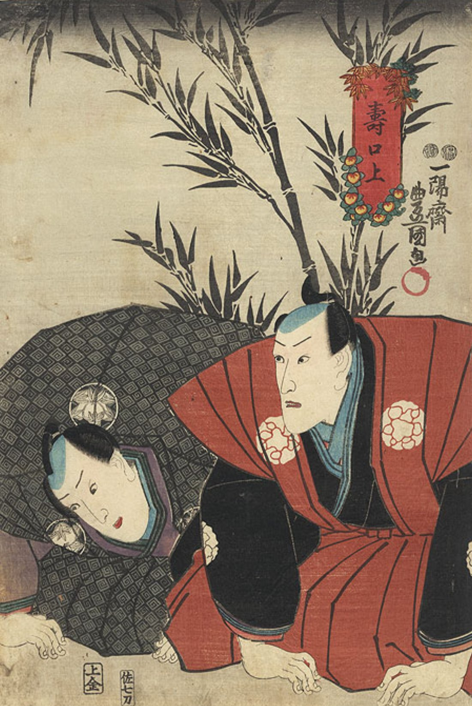

Sans JavaScript, tous les onglets restent visibles à la suite.
Présentation de l'étude
Comment le récit d'une humiliation devient-il, par l'humour et l'écriture, une revanche ?


Deux acteurs s'inclinent jusqu'au sol pour saluer le public : un geste codé de respect, qui fait penser aux « stupeur et tremblements » que la narratrice rejoue, avec ironie, dans le roman.
Le livre en bref
En 1990, une jeune Belge de 22 ans, Amélie, est engagée pour un an comme interprète dans une grande entreprise de Tokyo, la compagnie Yumimoto. Elle a passé sa petite enfance au Japon et rêve d'y devenir japonaise.
Mais elle ne comprend pas les règles de l'entreprise. De maladresse en sanction, elle descend tous les échelons, jusqu'au plus bas : nettoyer les toilettes. Elle tient pourtant jusqu'au bout de son contrat.
Le roman, court (environ 180 pages), a reçu le Grand Prix du roman de l'Académie française en 1999.
Objet d'étude et programme
- Programme : programme de français de seconde générale et technologique, arrêté du 17 janvier 2019, publié au Bulletin officiel spécial n° 1 du 22 janvier 2019.
- Objet d'étude : le roman et le récit du XVIIIe siècle au XXIe siècle.
- Œuvre intégrale : Stupeur et tremblements, roman bref du XXe siècle, lu en entier par les élèves.
- Exercices travaillés : explication de texte, commentaire, dissertation ou écrit d'appropriation, oral (présentation et échange), lecture de l'image filmique.
- Étude de la langue : les temps du récit (passé simple, imparfait), le discours rapporté, les procédés de l'ironie, le vocabulaire de la hiérarchie.
Ce que demande le programme (Éducation nationale)
Programme de français de seconde générale et technologique, arrêté du 17 janvier 2019, Bulletin officiel spécial n° 1 du 22 janvier 2019. Cette séquence répond explicitement à ses exigences :
- Objet d'étude : « Le roman et le récit du XVIIIe siècle au XXIe siècle ». Le programme demande l'étude d'œuvres intégrales et de textes en lecture cursive : ici, une œuvre intégrale, Stupeur et tremblements, avec quatre explications de texte et un texte d'évaluation.
- Lecture : explication de texte, lecture de l'œuvre intégrale suivie par une fiche de lecture, lecture de l'image (film d'Alain Corneau, estampes).
- Expression écrite : commentaire, dissertation, écrit d'appropriation, paragraphes d'analyse à chaque séance.
- Expression orale : lecture à voix haute, présentation orale de 2 à 3 minutes, échange argumenté structuré (table ronde sur le texte).
- Étude de la langue : temps du récit (passé simple, imparfait), discours direct et indirect, procédés de l'ironie, vocabulaire de la hiérarchie.
- Méthodes : trois cours de méthode (explication de texte, commentaire, dissertation), dans l'onglet Méthodes.
- Compétences travaillées : compréhension orale (CO), compréhension écrite (CE), production orale (PO), production écrite (PE), indiquées sur chaque activité avec son minutage.
Objectifs de la séquence
À la fin de la séquence, l'élève sait :
- situer l'œuvre (autrice, date, genre, contexte de l'écriture) ;
- distinguer l'autrice, la narratrice et le personnage, et définir l'autofiction ;
- repérer et nommer les registres (comique, ironique, satirique, pathétique) et dire leur effet ;
- mener une explication de texte organisée, en citant le texte ;
- montrer comment la narratrice transforme une humiliation subie en récit maîtrisé ;
- comparer un passage du roman et sa version filmée ;
- présenter à l'oral une analyse claire de 3 minutes et échanger avec la classe en s'appuyant sur le texte ;
- rédiger un commentaire ou un écrit d'appropriation structuré.
Les quatre compétences
Chaque activité indique le temps prévu (pastille de durée) et la ou les compétences travaillées. Dans le tableau : CO compréhension orale, CE compréhension écrite, PO production orale, PE production écrite.
| Pastille | Compétence |
|---|---|
| CO | Compréhension orale |
| CE | Compréhension écrite |
| PO | Production orale |
| PE | Production écrite |
Ce que vous trouverez ici
- Chaque séance est prête à projeter au tableau numérique : textes, questions, consignes, minutage à la minute près.
- Une trace écrite encadrée à chaque séance, à copier dans le cahier ou le classeur.
- Des devoirs et leurs corrigés prêts, cachés derrière un bouton Afficher / Cacher : on montre le corrigé quand on veut.
- Une version élève et une version prof : un clic suffit pour masquer les réponses avant de projeter.
- Une version dys de chaque séance : consignes courtes, étapes découpées, banque de mots.
- Une sortie de secours par séance, si le matériel ne fonctionne pas ou si la classe a besoin d'une autre approche.
- Une fiche élève imprimable par séance, en gros caractères.
- Trois cours de méthode (explication de texte, commentaire, dissertation), à copier dans le cahier.
- Une fiche de lecture de l'œuvre intégrale, imprimable, avec son corrigé dans la version prof.
- Un contrôle de lecture (QCM avec corrigé) et une évaluation finale (commentaire) avec grilles pour le professeur et pour l'élève.
Déroulé
| Séance | Contenu | Compétences | Durée |
|---|---|---|---|
| 1 | Entrer dans l'œuvre : le titre, le Japon, l'autrice | COCEPO | 1 h 30 |
| 2 | Explication de texte 1 : l'incipit et la hiérarchie | CEPE | 1 h 30 |
| 3 | Explication de texte 2 : la scène du café, le choc des cultures | CEPE | 1 h 30 |
| 4 | Explication de texte 3 : Fubuki et la condition des femmes | CEPOPE | 1 h 30 |
| 5 | Explication de texte 4 : les toilettes et le dénouement | CEPE | 1 h 30 |
| 6 | Synthèse : personnages, registres, autofiction, échange argumenté sur le texte | COCEPO | 2 h |
| 7 | Du livre au film (Alain Corneau, 2003) et oral | COPO | 2 h |
| 8 | Écriture : dissertation ou écrit d'appropriation | PE | 2 h |
| Éval. | Contrôle de lecture (QCM) et commentaire final | CEPE | 2 h 20 |
Calendrier de lecture conseillé : lecture de la première moitié du roman avant la séance 3, lecture complète avant la séance 5. Le contrôle de lecture peut être placé avant la séance 6.
Un mot sur le thème
Le roman raconte une humiliation. Certains élèves peuvent y reconnaître des situations vécues. Dans toute la séquence, on travaille sur le texte et sur la narratrice, jamais sur la vie privée des élèves : aucune question n'oblige un élève à raconter un souvenir personnel. Chaque séance se termine par une météo de la classe discrète et propose une aide au professeur si un élève semble touché.
Le Japon du roman est le Japon vu par la narratrice, à travers une seule entreprise, en 1990, et à travers son ironie. On ne tire du livre aucune vérité générale sur un pays ou sur ses habitants : c'est une règle de lecture rappelée en séances 1, 3 et 4.
Repères sur les passages étudiés
| Texte | Passage | Repère |
|---|---|---|
| Texte 1 | L'incipit : la chaîne hiérarchique et l'arrivée du 8 janvier 1990 | Premières pages du livre. Pages de l'édition de la classe : ........ |
| Texte 2 | La scène du café servi à la délégation, puis l'ordre de « ne plus comprendre le japonais » | Albin Michel, 1999, p. 20 à 22 environ. Pages de l'édition de la classe : ........ |
| Texte 3 | Fubuki réprimandée par monsieur Omochi devant tout le bureau, puis le passage où la narratrice décrit, à la deuxième personne, la condition qu'elle prête aux femmes de cette entreprise | Milieu du roman. À citer depuis l'édition de la classe. |
| Texte 4 | Amélie affectée aux toilettes ; la fenêtre ; le départ, l'écriture et la lettre finale de Fubuki | Dernier tiers et dernières pages. À citer depuis l'édition de la classe. |
| Texte d'évaluation | Le passage « Récapitulons » où la narratrice résume, avec humour, sa « chute » depuis ses rêves d'enfance jusqu'au poste le plus bas | Dernier tiers du roman. À reproduire depuis l'édition de la classe. |
Documents à télécharger
Chaque document existe en PDF, en Word et en LibreOffice.
Fiche professeur : la séquence complète, avec déroulés, corrigés et grilles
Toutes les fiches élèves (une activité par page)
Version dys (gros caractères, interligne 1,5, banque de mots)
Corrigés et grilles (prof)
Contrôle de lecture et évaluation finale, version élève
Fiche de lecture de l’œuvre intégrale
Fiches méthodes : explication de texte, commentaire, dissertation
Fiche élève, séance 1
Fiche élève, séance 2
Fiche élève, séance 3
Fiche élève, séance 4
Fiche élève, séance 5
Fiche élève, séance 6
Fiche élève, séance 7
Fiche élève, séance 8
Annexes
Liste des fiches élèves imprimables
| Fiche | Contenu |
|---|---|
| Fiche 1 | Titre, grille d'écoute sur l'autrice, organigramme, écrit d'attentes, trace écrite |
| Fiche 2 | Incipit (lignes numérotées), questions, paragraphe d'analyse, trace écrite, conjugaison |
| Fiche 3 | Règle de lecture, répliques de la scène du café, questions, tableau Saito / narratrice, trace écrite |
| Fiche 4 | Textes 3a et 3b (à reproduire), tableau admiration et rancune, consignes d'oral, trace écrite |
| Fiche 5 | Textes 4a, 4b, 4c (à reproduire), questions, paragraphe, fiche personnages |
| Fiche 6 | Personnages, tableau des registres, définitions, table ronde (règles et grille d'observation) |
| Fiche 7 | Lexique de l'image, grilles des extraits, tableau livre et film, sujets et grille d'oral |
| Fiche 8 | Sujets d'écriture, brouillon guidé, grille de relecture, grille de correction |
| Contrôle | QCM de 20 questions (et version dys de 10 questions) |
| Évaluation | Texte du commentaire (à reproduire), sujet, questions d'aide, grille élève |
| Méthodes 1 à 3 | Explication de texte, commentaire, dissertation |
| Fiche de lecture | Fiche de l'œuvre intégrale, version élève (corrigé dans la version prof) |
Passages à reproduire depuis l'édition de la classe
Pour respecter le texte exact, les passages suivants ne sont pas recopiés dans cette séquence ; l'enseignant les reproduit depuis l'édition de la classe et note les pages :
- La suite de l'incipit (arrivée du 8 janvier 1990, baie vitrée, monsieur Saito).
- Texte 3a : Fubuki réprimandée par monsieur Omochi.
- Texte 3b : le passage à la deuxième personne sur la condition des femmes dans l'entreprise.
- Texte 4a : les toilettes et la fenêtre.
- Texte 4b : l'ancien protocole impérial et la stupeur et les tremblements joués.
- Texte 4c : les dernières pages et la lettre de Fubuki.
- Texte d'évaluation : le passage « Récapitulons ».
Autres ressources (prof)
Version prof seulement. L'INA propose l'entretien d'Amélie Nothomb dans « Tout le monde en parle » (France 2, présenté par Thierry Ardisson, 25 mars 2000), consacré en partie à Stupeur et tremblements et à son expérience dans une entreprise japonaise : https://www.ina.fr/ina-eclaire-actu/video/i08301355/interview-amelie-nothomb C'est un talk-show, dont plusieurs passages ne concernent pas le livre ou conviennent mal à une classe : à visionner en entier avant tout usage, et ne projeter, éventuellement, que le passage sur l'entreprise. Minutages : à relever au visionnage.
Références
- Amélie Nothomb, Stupeur et tremblements, Paris, Albin Michel, 1999 ; Le Livre de Poche, n° 15071.
- Stupeur et tremblements, film d'Alain Corneau, 2003, avec Sylvie Testud et Kaori Tsuji.
- Programme de français de seconde générale et technologique, arrêté du 17 janvier 2019, Bulletin officiel spécial n° 1 du 22 janvier 2019.
- « Stupeur et tremblements », entretien d'Amélie Nothomb avec Marianne Payot (L'Express), Bibliothèque publique d'information, YouTube, 21 février 2018 : https://www.youtube.com/watch?v=R4kLzxbZyWc
- « Amélie Nothomb, "L'impossible retour" : Japon : un amour impossible », La Grande Librairie, France Télévisions, YouTube, 11 septembre 2024 : https://www.youtube.com/watch?v=vTy50RmapFU
- « Amélie Nothomb », journal de 20 h, Antenne 2, 5 septembre 2001, Fresques de l'INA : https://fresques.ina.fr/europe-des-cultures-fr/fiche-media/Europe00299/amelie-nothomb.html
- « Interview Amélie Nothomb », Tout le monde en parle, France 2, 25 mars 2000, INA (autres ressources, prof) : https://www.ina.fr/ina-eclaire-actu/video/i08301355/interview-amelie-nothomb
- « Fiche de lecture: Amélie Nothomb - Stupeur et tremblements », TlseJapon, YouTube, 22 janvier 2021 : https://youtu.be/Z8WphLD2Q9Y
- Philippe Lejeune, Le Pacte autobiographique, Seuil, 1975.
- Serge Doubrovsky, Fils, Galilée, 1977 (origine du mot « autofiction »).
© 2026 Madame Carole Paoli Pompougnac · CC BY-NC-SA 4.0
Fiche élève en PDF Word LibreOffice
Séance 1. Entrer dans l'œuvre : le titre, le Japon, l'autrice
Compétences : COCEPO, avec une courte production écrite. Durée : 1 h 30.
Objectifs : formuler des hypothèses de lecture à partir du titre ; connaître l'autrice et le contexte de l'écriture ; comprendre que le Japon du livre est le Japon vu par une narratrice ; entrer dans la problématique.
Matériel : tableau numérique ; l'Accueil du site projeté ; une édition du roman par élève ; fiche élève 1.
Déroulé minute par minute
| Minutes | Activité | Compétences |
|---|---|---|
| 0 à 5 | Installation, problématique projetée et lue à voix haute | CE |
| 5 à 15 | Activité 1. Le titre : ce qu'il nous fait attendre | PO |
| 15 à 35 | Activité 2. L'autrice : une présentation, puis Amélie Nothomb en entretien vidéo | COPE |
| 35 à 50 | Activité 3. Repères : l'entreprise Yumimoto et ses personnages | CE |
| 50 à 65 | Activité 4. Hypothèses de lecture et problématique | PO |
| 65 à 80 | Activité 5. Écrire ses attentes de lecteur | PE |
| 80 à 87 | Trace écrite | PE |
| 87 à 90 | Devoirs, météo de la classe |
Activité 1. Le titre PO
Pour l'enseignant. Projeter le titre seul, en grand. Faire réagir oralement. Noter les mots des élèves au tableau en deux colonnes : « stupeur », « tremblements ». Ne pas encore donner l'origine du titre.
Pour les élèves.
- Que signifie « stupeur » ? Que signifie « tremblements » ? Donnez un synonyme de chaque mot.
- Dans quelles situations peut-on ressentir de la stupeur et trembler ?
- Ce titre annonce-t-il un livre drôle ou un livre grave ? Gardez votre réponse : nous la vérifierons à la fin de la séquence.
Corrigé (prof)
- La stupeur est un étonnement si fort qu'il paralyse (synonymes : saisissement, ébahissement). Les tremblements sont des secousses du corps causées par la peur, le froid ou l'émotion.
- Devant une autorité très puissante, devant un danger, devant un événement inattendu.
- Le titre semble grave. Le roman montrera qu'il peut aussi être pris avec ironie : c'est tout l'enjeu de la problématique.
Pour l'enseignant, à garder pour la séance 5. Le titre vient d'un passage du dernier tiers du livre : la narratrice rappelle que, selon l'ancien protocole impérial, on devait s'adresser à l'Empereur avec « stupeur et tremblements », et elle reprend cette attitude, de façon théâtrale et ironique, face à sa supérieure. Passage à citer depuis l'édition de la classe.
Activité 2. L'autrice COPE
Pour l'enseignant. Première partie (8 min) : lire le texte suivant à voix haute, lentement, une fois ; les élèves complètent la grille de la fiche 1. Deuxième partie (12 min) : l'entretien vidéo ci-dessous. Si la vidéo ne peut pas être projetée, relire le script une seconde fois (voir la sortie de secours).
Script de l'enseignant (à lire à voix haute)
Amélie Nothomb est une romancière belge de langue française, née en 1966. Son père était diplomate : elle a passé ses premières années au Japon, puis a grandi dans d'autres pays d'Asie et en Amérique. Elle a fait des études de lettres à Bruxelles.
Au début des années 1990, elle retourne au Japon, le pays de son enfance. Elle travaille pendant un an dans une grande entreprise de Tokyo. Cette année difficile deviendra, presque dix ans plus tard, la matière de Stupeur et tremblements.
Son premier roman, Hygiène de l'assassin, paraît en 1992. Depuis, elle publie environ un livre par an. Stupeur et tremblements paraît en 1999 et reçoit le Grand Prix du roman de l'Académie française. En 2003, le réalisateur Alain Corneau l'adapte au cinéma, avec Sylvie Testud dans le rôle d'Amélie.
Dans ce livre, la narratrice s'appelle Amélie, comme l'autrice. Elle raconte à la première personne. Mais attention : raconter sa vie, c'est toujours choisir, arranger, mettre en scène. Nous verrons que ce récit mêle souvenirs et écriture romanesque.
Pour les élèves.
Complétez la grille.
Question Réponse Nationalité de l'autrice Année de naissance Pays de sa petite enfance Ce qu'elle fait au début des années 1990 Titre de son premier roman et date Date de Stupeur et tremblements et prix reçu Le réalisateur du film et la date Prénom de la narratrice
Corrigé (prof)
Belge ; 1966 ; le Japon ; elle travaille un an dans une grande entreprise de Tokyo ; Hygiène de l'assassin, 1992 ; 1999, Grand Prix du roman de l'Académie française ; Alain Corneau, 2003 ; Amélie.
Deuxième partie : Amélie Nothomb en entretien CO
Vidéo : « Amélie Nothomb, "L'impossible retour" : Japon : un amour impossible », La Grande Librairie, chaîne YouTube officielle « La Grande Librairie - France Télévisions », mise en ligne le 11 septembre 2024, 4 min 52. Lien : https://www.youtube.com/watch?v=vTy50RmapFU
 Voir l’entretien sur YouTube (4 min 52)
Voir l’entretien sur YouTube (4 min 52)Source : La Grande Librairie, France Télévisions. La vidéo s’ouvre dans un nouvel onglet.
Pour l'enseignant. L'entretien date de 2024 ; l'autrice y présente un autre livre, L'Impossible Retour, mais elle y parle du Japon de son enfance, de son retour à l'âge adulte pour y travailler et de ce que cette expérience lui a laissé. Visionner l'extrait en entier avant le cours et relever les minutages utiles. Minutages des passages : à relever au visionnage. Un premier visionnage sans écrire, un second avec les questions. Ne citer l'autrice qu'avec des phrases relevées soi-même au visionnage. D'autres invités peuvent intervenir dans l'extrait : on s'en tient à ce que dit Amélie Nothomb.
Pour les élèves.
Écoutez Amélie Nothomb, puis répondez.
- Le Japon de son enfance : quels mots emploie-t-elle pour le décrire ? Notez-en deux.
- Le retour à l'âge adulte : à quel âge revient-elle ? Dans quelle ville ? Ce Japon est-il le même que celui de son enfance ?
- Le travail : que dit-elle de son expérience de travail là-bas et de la manière dont elle est partie ?
- La langue : quelle image utilise-t-elle pour parler de la langue japonaise ?
- L'écriture : d'après cet entretien, quel lien voyez-vous entre ce qu'elle a vécu et le livre que nous allons lire ?
Corrigé (prof)
réponses à vérifier au visionnage, sur les phrases exactes de l'autrice. Les élèves doivent distinguer le Japon de l'enfance, tel qu'elle le décrit, et le Japon de l'entreprise, à l'âge adulte ; pour la question 5, on attend l'idée que l'expérience vécue est devenue matière d'un livre, des années plus tard.
Variante courte (2 min) : reportage de l'INA, journal de 20 h d'Antenne 2 du 5 septembre 2001, « Amélie Nothomb », 1 min 57, site Fresques de l'INA : https://fresques.ina.fr/europe-des-cultures-fr/fiche-media/Europe00299/amelie-nothomb.html Amélie Nothomb y parle de son enfance japonaise, de son arrivée en Belgique et du début de son écriture. Minutages : à relever au visionnage. Questions : Jusqu'à quel âge dit-elle avoir été japonaise ? Que découvre-t-elle en arrivant en Belgique ? Quand commence-t-elle à écrire ?
Source : Fresques de l’INA, journal de 20 h d’Antenne 2, 5 septembre 2001.
Ressource facultative (CO, en devoir ou en prolongement) : « Fiche de lecture: Amélie Nothomb - Stupeur et tremblements », chaîne YouTube TlseJapon, mise en ligne le 22 janvier 2021, 3 min 34. Lien : https://youtu.be/Z8WphLD2Q9Y Ce n'est pas un entretien avec l'autrice. Le professeur la visionne avant de la proposer. Consigne possible : « Notez trois informations sur le livre données dans la vidéo, et vérifiez-les dans votre exemplaire. »
Activité 3. Repères : l'entreprise Yumimoto et ses personnages CE
Pour l'enseignant. Projeter l'organigramme ci-dessous. Lecture silencieuse (4 min), puis questions (7 min), puis mise en commun (4 min). Rappeler la règle de lecture : nous découvrons l'entreprise uniquement par les yeux de la narratrice.
Pour les élèves.
Les personnages, du plus haut au plus bas
- Monsieur Haneda, le président.
- Monsieur Omochi, le vice-président, colérique et redouté.
- Monsieur Saito, chef de bureau.
- Mademoiselle Fubuki Mori, supérieure directe d'Amélie, très belle et très exigeante.
- Amélie, la narratrice, engagée comme interprète, « supérieure de personne ».
À côté de cette chaîne : monsieur Tenshi, un cadre qui confie un jour à Amélie un vrai travail.
Questions
- Combien de personnes se trouvent au-dessus d'Amélie ?
- Quelle est la place de Fubuki dans la chaîne ? Pourquoi sera-t-elle la plus proche d'Amélie, au bureau ?
- Le roman est raconté par Amélie. Que risque-t-on de ne pas savoir sur les autres personnages ?
- Un mot revient dans le livre : ôchakumi, le service du thé et du café. Quelle tâche, selon vous, une débutante risque-t-elle de recevoir ?
Corrigé (prof)
- Quatre.
- Elle est juste au-dessus d'Amélie : elle est sa supérieure directe, leurs bureaux se font face.
- Ce qu'ils pensent vraiment. Nous n'avons que le regard, les interprétations et l'ironie d'Amélie.
- Servir le thé et le café, faire des photocopies, des tâches sans responsabilité.
Activité 4. Hypothèses de lecture et problématique PO
Pour l'enseignant. Tour de parole organisé : chaque groupe de trois prépare une hypothèse en 5 minutes, puis la présente en une minute. On écrit les hypothèses au tableau ; elles seront relues en séance 6.
Pour les élèves.
Relisez la problématique : « Comment le récit d'une humiliation devient-il, par l'humour et l'écriture, une revanche ? »
- Qu'est-ce qu'une humiliation ? (Une définition en une phrase.)
- Comment peut-on prendre une revanche sans violence, seulement en écrivant ?
- Proposez une hypothèse : comment, d'après vous, la narratrice va-t-elle utiliser l'humour ?
Corrigé (prof)
- Une humiliation est une situation où quelqu'un est rabaissé, atteint dans sa dignité, souvent devant les autres.
- En racontant soi-même l'histoire : on choisit les mots, on reprend le pouvoir sur le récit, on fait rire le lecteur, on transforme l'épreuve en œuvre.
- Hypothèses attendues : elle se moquera d'elle-même ; elle montrera l'absurdité des ordres ; elle exagérera pour faire rire ; elle aura le dernier mot.
Activité 5. Écrire ses attentes de lecteur PE
Pour les élèves.
En 8 à 10 lignes, écrivez ce que vous attendez de ce livre, à partir du titre, de la présentation de l'autrice et de l'organigramme. Employez au moins deux de ces mots : hiérarchie, humiliation, humour, narratrice, revanche.
Il ne s'agit pas de parler de vous : vous écrivez en tant que lecteur ou lectrice.
Corrigé (prof) (exemple de réponse)
« Le titre fait attendre un livre grave, peut-être une histoire de peur. Mais la présentation annonce une narratrice qui raconte elle-même son humiliation, des années plus tard : elle pourra donc choisir ses mots et peut-être se moquer de la hiérarchie. L'organigramme montre qu'Amélie est tout en bas : je m'attends à ce qu'elle reçoive des ordres de tout le monde. J'imagine que l'humour lui servira à supporter la situation, et que l'écriture du livre sera sa revanche. »
Vérifier ses acquis (formatif, 3 questions à main levée ou sur ardoise)
- Qui raconte l'histoire ? (La narratrice, Amélie.)
- Qui est la supérieure directe d'Amélie ? (Fubuki Mori.)
- Quel est le mot de la problématique qui désigne ce que l'écriture permet de prendre ? (Une revanche.)
Trace écrite (à copier dans le cahier ou le classeur)
Séance 1. Entrer dans l'œuvre
Stupeur et tremblements (1999) est un récit à la première personne d'Amélie Nothomb, romancière belge née en 1966. La narratrice, Amélie, raconte l'année qu'elle a passée comme employée dans une grande entreprise de Tokyo, la compagnie Yumimoto, en 1990.
Elle se trouve tout en bas d'une hiérarchie stricte : monsieur Haneda, monsieur Omochi, monsieur Saito, mademoiselle Mori, puis elle.
Le Japon du livre est le Japon vu par la narratrice, dans une seule entreprise : c'est un regard personnel, souvent ironique.
Problématique : comment le récit d'une humiliation devient-il, par l'humour et l'écriture, une revanche ?
Devoirs
- Lire le roman jusqu'à la fin de la scène du café (l'ordre de « ne plus comprendre le japonais »).
- Commencer la fiche de lecture (onglet Fiche de lecture) : rubriques 1, 2 et 3.
- Relire les deux premières pages et relever trois mots qui expriment la hiérarchie.
Corrigé (prof)
supérieur, supérieure, aux ordres, échelons hiérarchiques, en aval (tous présents dans l'incipit).
Sortie de secours
Si le tableau numérique ou la connexion ne fonctionnent pas : écrire le titre au tableau ; lire deux fois le script de l'activité 2, à la place de l'entretien vidéo ; dessiner l'organigramme sous forme d'escalier, Amélie sur la dernière marche. Les élèves recopient l'escalier et écrivent sous chaque marche le nom et la fonction. Activités 4 et 5 inchangées, sur papier.
Si la classe est agitée ou fatiguée : remplacer l'activité 4 par une lecture à voix haute, par le professeur, des deux premières pages du roman, puis trois questions orales simples (Qui parle ? Où ? Qui commande ?).
Météo de la classe
Pour l'enseignant. Chaque élève écrit sur un petit papier, sans son nom, un seul mot parmi : soleil, éclaircie, nuage, pluie, orage, pour dire comment s'est passée la séance pour lui. Les papiers sont pliés et ramassés. On n'en parle pas devant la classe. Le professeur les lit après le cours et adapte la séance suivante.
Aide (prof) : si un élève semble touché
Le thème de l'humiliation peut réveiller des souvenirs. Si un élève se ferme, pleure ou réagit fortement : ne pas l'interroger devant la classe ; lui proposer, en fin d'heure et à l'écart, un mot simple (« Tu as l'air préoccupé, tu veux en parler à quelqu'un ? ») ; rappeler qu'il n'a rien à raconter s'il ne le souhaite pas ; l'orienter, avec son accord, vers le CPE, l'infirmière ou l'infirmier scolaire, ou le psychologue de l'Éducation nationale. En cas de danger, informer sans délai la direction. Ressources pour les jeunes : Fil Santé Jeunes, 0 800 235 236 (appel anonyme) ; 3018 pour le harcèlement en ligne.
Fiche élève 1 (imprimable)
Titre et problématique ; fiche de lecture à compléter au fil des séances ; questions de l'activité 1 ; grille de l'activité 2 ; organigramme et questions de l'activité 3 ; lignes d'écriture pour l'activité 5 ; cadre de la trace écrite ; devoirs.
Version dys : ce qui change
- Titre et problématique en gros caractères, mots clés en gras : humiliation, humour, revanche.
- Activité 2 : grille réduite à cinq lignes (nationalité, pays d'enfance, premier roman, date du livre, prénom de la narratrice) ; le script est donné écrit après la seconde écoute.
- Organigramme en escalier avec une couleur par marche.
- Activité 5 : 5 lignes au lieu de 10, avec un début de phrase donné : « Le titre me fait penser que... ».
- Banque de mots visible : narratrice, hiérarchie, supérieur, humiliation, revanche, ironie.
Les consignes, en version dys
Activité 1. Le titre
Pour les élèves.
- Que signifie « stupeur » ? Que signifie « tremblements » ? Donnez un synonyme de chaque mot.
- Dans quelles situations peut-on ressentir de la stupeur et trembler ?
- Ce titre annonce-t-il un livre drôle ou un livre grave ? Gardez votre réponse : nous la vérifierons à la fin de la séquence.
Activité 2. L'autrice
Pour les élèves.
Complétez la grille.
Question Réponse Nationalité de l'autrice Année de naissance Pays de sa petite enfance Ce qu'elle fait au début des années 1990 Titre de son premier roman et date Date de Stupeur et tremblements et prix reçu Le réalisateur du film et la date Prénom de la narratrice
Pour les élèves.
Écoutez Amélie Nothomb, puis répondez.
- Le Japon de son enfance : quels mots emploie-t-elle pour le décrire ? Notez-en deux.
- Le retour à l'âge adulte : à quel âge revient-elle ? Dans quelle ville ? Ce Japon est-il le même que celui de son enfance ?
- Le travail : que dit-elle de son expérience de travail là-bas et de la manière dont elle est partie ?
- La langue : quelle image utilise-t-elle pour parler de la langue japonaise ?
- L'écriture : d'après cet entretien, quel lien voyez-vous entre ce qu'elle a vécu et le livre que nous allons lire ?
Activité 3. Repères : l'entreprise Yumimoto et ses personnages
Pour les élèves.
Les personnages, du plus haut au plus bas
- Monsieur Haneda, le président.
- Monsieur Omochi, le vice-président, colérique et redouté.
- Monsieur Saito, chef de bureau.
- Mademoiselle Fubuki Mori, supérieure directe d'Amélie, très belle et très exigeante.
- Amélie, la narratrice, engagée comme interprète, « supérieure de personne ».
À côté de cette chaîne : monsieur Tenshi, un cadre qui confie un jour à Amélie un vrai travail.
Questions
- Combien de personnes se trouvent au-dessus d'Amélie ?
- Quelle est la place de Fubuki dans la chaîne ? Pourquoi sera-t-elle la plus proche d'Amélie, au bureau ?
- Le roman est raconté par Amélie. Que risque-t-on de ne pas savoir sur les autres personnages ?
- Un mot revient dans le livre : ôchakumi, le service du thé et du café. Quelle tâche, selon vous, une débutante risque-t-elle de recevoir ?
Activité 4. Hypothèses de lecture et problématique
Pour les élèves.
Relisez la problématique : « Comment le récit d'une humiliation devient-il, par l'humour et l'écriture, une revanche ? »
- Qu'est-ce qu'une humiliation ? (Une définition en une phrase.)
- Comment peut-on prendre une revanche sans violence, seulement en écrivant ?
- Proposez une hypothèse : comment, d'après vous, la narratrice va-t-elle utiliser l'humour ?
Activité 5. Écrire ses attentes de lecteur
Pour les élèves.
En 8 à 10 lignes, écrivez ce que vous attendez de ce livre, à partir du titre, de la présentation de l'autrice et de l'organigramme. Employez au moins deux de ces mots : hiérarchie, humiliation, humour, narratrice, revanche.
Il ne s'agit pas de parler de vous : vous écrivez en tant que lecteur ou lectrice.
Trace écrite (à copier dans le cahier ou le classeur)
Séance 1. Entrer dans l'œuvre
Stupeur et tremblements (1999) est un récit à la première personne d'Amélie Nothomb, romancière belge née en 1966. La narratrice, Amélie, raconte l'année qu'elle a passée comme employée dans une grande entreprise de Tokyo, la compagnie Yumimoto, en 1990.
Elle se trouve tout en bas d'une hiérarchie stricte : monsieur Haneda, monsieur Omochi, monsieur Saito, mademoiselle Mori, puis elle.
Le Japon du livre est le Japon vu par la narratrice, dans une seule entreprise : c'est un regard personnel, souvent ironique.
Problématique : comment le récit d'une humiliation devient-il, par l'humour et l'écriture, une revanche ?
Devoirs
- Lire le roman jusqu'à la fin de la scène du café (l'ordre de « ne plus comprendre le japonais »).
- Commencer la fiche de lecture (onglet Fiche de lecture) : rubriques 1, 2 et 3.
- Relire les deux premières pages et relever trois mots qui expriment la hiérarchie.
© 2026 Madame Carole Paoli Pompougnac · CC BY-NC-SA 4.0
Fiche élève en PDF Word LibreOffice
Séance 2. Explication de texte 1 : l'incipit et la hiérarchie
Au bord de la route, des voyageurs s'inclinent au passage d'un cortège officiel : une hiérarchie qui se lit dans les corps, comme celle de la compagnie Yumimoto, que la narratrice observe et raconte de l'extérieur.
Pour l'enseignant, amorce possible (3 min, pendant l'installation). Projeter l'estampe : « Qui s'incline ? Devant qui ? Comment l'image montre-t-elle qui est en haut et qui est en bas ? » Puis passer à la première phrase du roman, qui construit elle aussi une hiérarchie.
Compétences : CEPE. Durée : 1 h 30.
Objectifs : mener une explication linéaire ; analyser la construction d'une phrase ; repérer l'humour dès la première page ; revoir le passé simple et l'imparfait.
Texte : l'incipit, des premières lignes jusqu'à la fin de l'arrivée d'Amélie à l'étage (premières pages du livre). Pages de l'édition de la classe : ........
Le passage
Pour l'enseignant. Les deux premiers paragraphes sont cités ci-dessous. La suite (arrivée au dernier étage, rencontre avec monsieur Saito) est lue dans l'édition de la classe.
« Monsieur Haneda était le supérieur de monsieur Omochi, qui était le supérieur de monsieur Saito, qui était le supérieur de mademoiselle Mori, qui était ma supérieure. Et moi, je n'étais la supérieure de personne.
On pourrait dire les choses autrement. J'étais aux ordres de mademoiselle Mori, qui était aux ordres de monsieur Saito, et ainsi de suite, avec cette précision que les ordres pouvaient, en aval, sauter les échelons hiérarchiques. Donc, dans la compagnie Yumimoto, j'étais aux ordres de tout le monde. »
Suite du passage, à citer depuis l'édition de la classe : la phrase qui donne la date d'arrivée, « Le 8 janvier 1990, l'ascenseur me cracha au dernier étage de l'immeuble Yumimoto. », puis la fascination pour la baie vitrée et l'accueil mécontent de monsieur Saito.
Déroulé minute par minute
| Minutes | Activité | Compétences |
|---|---|---|
| 0 à 5 | Installation, correction rapide des devoirs (mots de la hiérarchie) | CE |
| 5 à 15 | Activité 1. Lecture expressive et première impression | CE |
| 15 à 35 | Activité 2. Premier mouvement : la chaîne des supérieurs | CE |
| 35 à 55 | Activité 3. Deuxième mouvement : « On pourrait dire les choses autrement » | CE |
| 55 à 65 | Activité 4. L'arrivée : la baie vitrée et la première faute | CE |
| 65 à 82 | Activité 5. Cours de méthode : l'explication de texte (onglet Méthodes, méthode 1, 7 min), puis rédiger un paragraphe d'analyse (10 min) | CEPE |
| 82 à 87 | Trace écrite | PE |
| 87 à 90 | Devoirs, météo de la classe |
Activité 1. Lecture et première impression CE
Pour l'enseignant. Lire le passage à voix haute. Faire relire la première phrase par trois élèves, chacun avec un ton différent (sérieux, essoufflé, amusé).
Pour les élèves.
- Quelle impression produit la première phrase quand on la lit à voix haute ?
- Quelle phrase, très courte, vient après ? Quel effet produit ce contraste ?
Corrigé (prof)
- Une impression d'escalier qui descend, de répétition presque comique, et d'essoufflement.
- « Et moi, je n'étais la supérieure de personne. » La phrase courte tombe comme une chute : la narratrice se place tout en bas, avec un humour discret.
Activité 2. La chaîne des supérieurs CE
Pour les élèves.
- Relevez la tournure répétée dans la première phrase. Comment s'appelle cette répétition ?
- Dans quel ordre les personnages sont-ils nommés ? Comment appelle-t-on une énumération qui va du plus important au moins important ?
- Quel mot est repris, mais change de genre, à la fin de la phrase ? Pourquoi ?
- Pourquoi peut-on dire que la deuxième phrase est une chute comique ?
Corrigé (prof)
- « qui était le supérieur de » : c'est une répétition en cascade (reprise de la proposition relative, anaphore de la tournure).
- Du président à la narratrice, en descendant : c'est une gradation descendante.
- « supérieure » : le mot passe au féminin parce que l'on arrive à mademoiselle Mori, puis à la narratrice. Les deux femmes sont en bas de la chaîne.
- Après une longue phrase solennelle, la phrase brève renverse tout : « supérieure de personne ». La négation finale fait sourire, et la narratrice se moque déjà d'elle-même.
Activité 3. « On pourrait dire les choses autrement » CE
Pour les élèves.
- Que fait la narratrice dans le deuxième paragraphe ? Comment appelle-t-on ce procédé ?
- Expliquez l'expression « les ordres pouvaient, en aval, sauter les échelons hiérarchiques ». Que signifie « en aval » ?
- Quel connecteur introduit la conclusion ? Quelle est cette conclusion ?
- Le ton est-il celui d'une plainte ou celui d'une démonstration ? Justifiez.
Corrigé (prof)
- Elle reformule la même idée en inversant le point de vue (on passe de « être le supérieur de » à « être aux ordres de ») : c'est une reformulation, une sorte de démonstration logique.
- « En aval » : vers le bas, comme un cours d'eau qui descend. N'importe quel supérieur peut donner un ordre directement à la narratrice.
- « Donc » : « j'étais aux ordres de tout le monde ».
- Le ton imite une démonstration logique, froide et précise. C'est cette précision, appliquée à une situation humiliante, qui crée l'humour : la narratrice ne se plaint pas, elle constate.
Activité 4. L'arrivée CE
Pour les élèves. (Relire la suite dans votre livre.)
- Quel verbe décrit le mouvement de l'ascenseur ? Que suggère-t-il ?
- Qu'est-ce qui fascine la narratrice en arrivant ?
- Quelle est sa première « faute » ? Comment réagit monsieur Saito ?
Corrigé (prof)
- « cracha » : un verbe familier et violent, qui fait de la narratrice un objet rejeté, avant même son premier jour.
- La baie vitrée, la vue sur la ville et le vide. (Ce motif de la fenêtre reviendra à la fin du roman.)
- Elle ne s'est pas présentée à la réception. Monsieur Saito la regarde avec mécontentement : elle a déjà fait mauvaise impression sans avoir dit un mot.
Activité 5. Cours de méthode, puis paragraphe d'analyse CEPE
Pour l'enseignant. Projeter la méthode 1 (onglet Méthodes) et la faire lire (7 min). Les élèves la copient en devoir dans la partie « Méthodes » du cahier. Puis rédaction du paragraphe (10 min).
Pour les élèves.
Rédigez un paragraphe de 10 à 12 lignes qui répond à la question : Comment l'incipit présente-t-il, avec humour, la place de la narratrice ?
Votre paragraphe contient : une idée (phrase d'annonce), deux citations, l'analyse de chaque citation (procédé et effet), une phrase de conclusion.
Corrigé (prof) (paragraphe modèle)
« Dès l'incipit, la narratrice présente sa place dans l'entreprise avec un humour discret. La première phrase enchaîne les noms dans une gradation descendante, en répétant "qui était le supérieur de" : cette cascade imite l'escalier de la hiérarchie et finit par essouffler le lecteur. La chute, "Et moi, je n'étais la supérieure de personne", renverse cette solennité : la phrase brève et la négation font sourire, car la narratrice se moque d'elle-même. Le deuxième paragraphe reformule l'idée comme une démonstration, jusqu'au connecteur "Donc" : "j'étais aux ordres de tout le monde". Ainsi, la narratrice ne se plaint pas ; elle transforme sa position la plus basse en effet de style, et prend déjà le dessus par l'écriture. »
Vérifier ses acquis (formatif)
- Qu'est-ce qu'une gradation ? (Une énumération qui monte ou qui descend en intensité.)
- À quel temps sont « était » et « cracha » ? Pourquoi ces deux temps ? (Imparfait pour la situation et la description ; passé simple pour l'action ponctuelle.)
- Citez la phrase la plus courte du premier paragraphe.
Trace écrite
Séance 2. L'incipit : une hiérarchie racontée avec humour
- Une chaîne hiérarchique : la première phrase est construite en cascade (« qui était le supérieur de ») et forme une gradation descendante, du président à la narratrice.
- Une chute comique : « Et moi, je n'étais la supérieure de personne. » La narratrice se met en scène tout en bas, avec autodérision.
- Une fausse démonstration : la reformulation et le connecteur « Donc » donnent un ton logique et froid à une situation humiliante. Ce décalage crée l'humour.
- Une arrivée déjà ratée : l'ascenseur la « cracha » ; la fascination pour la baie vitrée annonce un motif du roman.
Retour à la problématique : dès la première page, la narratrice raconte son infériorité avec des mots qu'elle maîtrise : l'écriture lui donne déjà le dessus.
Devoirs
- Lire le roman jusqu'à la scène du rapport demandé par monsieur Tenshi (sur le beurre allégé) et ses suites.
- Exercice de langue : mettre au passé simple les verbes entre parenthèses dans les trois phrases suivantes. « Le directeur (entrer) dans le bureau. Les employés (se lever). Il (prononcer) un long discours. »
Corrigé (prof)
entra ; se levèrent ; prononça.
Sortie de secours
Sans projection : écrire au tableau la première phrase, en allant à la ligne à chaque « qui était le supérieur de », pour faire apparaître l'escalier. Les élèves recopient en traçant un trait qui descend à côté (dans leur cahier seulement). Puis explication orale guidée des activités 2 et 3, livres ouverts. L'activité 5 devient un paragraphe à trous, dicté.
Météo de la classe
Même dispositif qu'en séance 1 (un mot, papier plié, sans nom). Variante possible : une note de 1 à 5 sur « Je me suis senti à l'aise pendant la séance ».
Aide (prof)
Si un élève fait un lien entre la place d'Amélie et sa propre situation (dans la classe, au travail, en famille), l'écouter brièvement, sans faire de ce lien un sujet pour la classe. Lui proposer un temps à part, et l'orienter si besoin vers le CPE, l'infirmerie ou le psychologue de l'Éducation nationale. Rappeler à toute la classe, sans viser personne : « Ici, on analyse un texte. Personne n'a à parler de sa vie. »
Fiche élève 2 (imprimable)
Texte de l'incipit (deux premiers paragraphes en gros caractères, lignes numérotées) ; questions des activités 1 à 4 ; cadre du paragraphe d'analyse ; trace écrite ; exercice de conjugaison.
Version dys : ce qui change
- Première phrase présentée en escalier, une proposition par ligne.
- Questions réduites à deux par activité.
- Paragraphe d'analyse guidé : « Dans la première phrase, la narratrice répète ......... Cela crée l'impression de ......... La phrase "Et moi, je n'étais la supérieure de personne" est drôle parce que ......... »
- Banque de mots : gradation, répétition, chute, autodérision, imparfait, passé simple.
Les consignes, en version dys
Activité 1. Lecture et première impression
Pour les élèves.
- Quelle impression produit la première phrase quand on la lit à voix haute ?
- Quelle phrase, très courte, vient après ? Quel effet produit ce contraste ?
Activité 2. La chaîne des supérieurs
Pour les élèves.
- Relevez la tournure répétée dans la première phrase. Comment s'appelle cette répétition ?
- Dans quel ordre les personnages sont-ils nommés ? Comment appelle-t-on une énumération qui va du plus important au moins important ?
- Quel mot est repris, mais change de genre, à la fin de la phrase ? Pourquoi ?
- Pourquoi peut-on dire que la deuxième phrase est une chute comique ?
Activité 3. « On pourrait dire les choses autrement »
Pour les élèves.
- Que fait la narratrice dans le deuxième paragraphe ? Comment appelle-t-on ce procédé ?
- Expliquez l'expression « les ordres pouvaient, en aval, sauter les échelons hiérarchiques ». Que signifie « en aval » ?
- Quel connecteur introduit la conclusion ? Quelle est cette conclusion ?
- Le ton est-il celui d'une plainte ou celui d'une démonstration ? Justifiez.
Activité 4. L'arrivée
Pour les élèves. (Relire la suite dans votre livre.)
- Quel verbe décrit le mouvement de l'ascenseur ? Que suggère-t-il ?
- Qu'est-ce qui fascine la narratrice en arrivant ?
- Quelle est sa première « faute » ? Comment réagit monsieur Saito ?
Activité 5. Cours de méthode, puis paragraphe d'analyse
Pour les élèves.
Rédigez un paragraphe de 10 à 12 lignes qui répond à la question : Comment l'incipit présente-t-il, avec humour, la place de la narratrice ?
Votre paragraphe contient : une idée (phrase d'annonce), deux citations, l'analyse de chaque citation (procédé et effet), une phrase de conclusion.
Trace écrite
Séance 2. L'incipit : une hiérarchie racontée avec humour
- Une chaîne hiérarchique : la première phrase est construite en cascade (« qui était le supérieur de ») et forme une gradation descendante, du président à la narratrice.
- Une chute comique : « Et moi, je n'étais la supérieure de personne. » La narratrice se met en scène tout en bas, avec autodérision.
- Une fausse démonstration : la reformulation et le connecteur « Donc » donnent un ton logique et froid à une situation humiliante. Ce décalage crée l'humour.
- Une arrivée déjà ratée : l'ascenseur la « cracha » ; la fascination pour la baie vitrée annonce un motif du roman.
Retour à la problématique : dès la première page, la narratrice raconte son infériorité avec des mots qu'elle maîtrise : l'écriture lui donne déjà le dessus.
Devoirs
- Lire le roman jusqu'à la scène du rapport demandé par monsieur Tenshi (sur le beurre allégé) et ses suites.
- Exercice de langue : mettre au passé simple les verbes entre parenthèses dans les trois phrases suivantes. « Le directeur (entrer) dans le bureau. Les employés (se lever). Il (prononcer) un long discours. »
© 2026 Madame Carole Paoli Pompougnac · CC BY-NC-SA 4.0
Fiche élève en PDF Word LibreOffice
Séance 3. Explication de texte 2 : la scène du café, le choc des cultures
Compétences : CEPE. Durée : 1 h 30.
Objectifs : analyser une scène dialoguée ; repérer l'ironie de la narratrice ; comprendre le « choc des cultures » comme un point de vue de la narratrice et un ressort comique, non comme une vérité sur un peuple ; étudier le discours direct.
Texte : la scène du café servi à la délégation d'une firme amie, puis l'entretien avec monsieur Saito et l'ordre de « ne plus comprendre le japonais ». Repère : Albin Michel, 1999, p. 20 à 22 environ. Pages de l'édition de la classe : ........
Pour l'enseignant. Le passage est lu dans l'édition de la classe, depuis « Un matin, monsieur Saito me signala que le vice-président recevait dans son bureau une importante délégation d'une firme amie » jusqu'à la fin de l'entretien avec monsieur Saito. Les citations ci-dessous sont exactes ; les donner entre guillemets.
Règle de lecture, à dire en début de séance
Ce que nous lisons est la scène telle que la narratrice la raconte. Elle choisit ses mots, elle exagère, elle ironise. Nous étudions un regard et une écriture, pas les habitudes d'un pays.
Déroulé minute par minute
| Minutes | Activité | Compétences |
|---|---|---|
| 0 à 5 | Installation, règle de lecture, rappel de la séance 2 | CE |
| 5 à 15 | Activité 1. Lecture à plusieurs voix | CE |
| 15 à 30 | Activité 2. Le service du café : une perfection exagérée | CE |
| 30 à 50 | Activité 3. L'entretien : un ordre impossible | CE |
| 50 à 62 | Activité 4. Qui parle de « cerveaux » ? L'ironie de la narratrice | CE |
| 62 à 80 | Activité 5. Paragraphe d'analyse | PE |
| 80 à 86 | Trace écrite | PE |
| 86 à 90 | Devoirs, météo de la classe |
Activité 1. Lecture à plusieurs voix CE
Pour l'enseignant. Trois lecteurs volontaires : la narratrice, monsieur Saito, Amélie dans le dialogue. Le professeur lit lui-même les passages de récit si aucun volontaire ne se propose. Personne n'est obligé de lire.
Pour les élèves.
- Résumez la scène en trois phrases : avant, pendant, après.
- Pourquoi Amélie est-elle punie ?
Corrigé (prof)
- Amélie sert le café à une délégation d'une firme amie, avec les formules de politesse les plus raffinées. Après le départ des visiteurs, monsieur Omochi crie contre monsieur Saito, qui convoque Amélie. Monsieur Saito lui ordonne de ne plus parler, ni même comprendre, le japonais.
- Parce qu'elle a montré qu'elle parlait très bien japonais : selon monsieur Saito, les visiteurs ne pouvaient pas se sentir en confiance.
Activité 2. Une perfection exagérée CE
Pour les élèves.
- Relevez les mots qui montrent qu'Amélie se croit parfaite dans le service du café.
- Que signifie la phrase « S'il existait un ordre du mérite de l'ôchakumi, il eût dû m'être décerné » ? Quel est le ton ?
- Relevez les mots qui décrivent monsieur Omochi et sa voix. Quel effet produisent-ils ?
Corrigé (prof)
- « je fus plus que parfaite », « une humilité appuyée », « psalmodiant les plus raffinées des formules d'usage ».
- Elle imagine une décoration pour récompenser le service du thé : c'est une hyperbole ironique. La narratrice se moque d'elle-même et de sa fierté naïve, juste avant la sanction.
- « La voix tonitruante », « l'énorme monsieur Omochi », « l'antre du vice-président » : vocabulaire de l'ogre ou du monstre. L'exagération rend le personnage effrayant et comique à la fois.
Activité 3. Un ordre impossible CE
Pour l'enseignant. Faire relire le dialogue par deux élèves. Écrire au tableau les deux répliques suivantes, exactes :
« Vous avez profondément indisposé la délégation de la firme amie ! Vous avez servi le café avec des formules qui suggéraient que vous parliez le japonais à la perfection ! »
« Je vous donne l'ordre de ne plus comprendre le japonais. »
Pour les élèves.
- Quels types de phrases dominent dans les répliques de monsieur Saito ? Qu'expriment-elles ?
- Pourquoi l'ordre « ne plus comprendre le japonais » est-il absurde ? Qu'en dit Amélie ?
- Amélie a été engagée pour une raison précise. Laquelle ? En quoi l'ordre est-il contradictoire ?
- Relevez la réplique d'Amélie qui montre qu'elle essaie de se défendre. Quelle est la réaction de monsieur Saito ?
Corrigé (prof)
- Exclamatives et impératives (« Taisez-vous ! ») : colère, autorité, refus du dialogue.
- On ne peut pas décider d'oublier une langue qu'on comprend. Amélie répond : « C'est impossible. Personne ne peut obéir à un ordre pareil. »
- Pour sa connaissance du japonais : « c'est pour ma connaissance de votre langue que Yumimoto m'a engagée ! » L'entreprise lui interdit la compétence pour laquelle elle l'a recrutée : la situation est absurde.
- « Mais je ne le parle pas si mal, Saito-san. » Monsieur Saito la fait taire : « Taisez-vous ! De quel droit vous défendez-vous ? »
Activité 4. L'ironie de la narratrice CE
Pour l'enseignant. Projeter les deux répliques suivantes, exactes, et la phrase de récit qui suit :
« Il y a toujours moyen d'obéir. C'est ce que les cerveaux occidentaux devraient comprendre. »
« Le cerveau nippon est probablement capable de se forcer à oublier une langue. Le cerveau occidental n'en a pas les moyens. »
« Cet argument extravagant parut recevable à monsieur Saito. »
Pour les élèves.
- Qui prononce chaque réplique ?
- Amélie croit-elle vraiment à ce qu'elle dit sur les « cerveaux » ? Quel mot de la narratrice le prouve ?
- Dans ce passage, les idées toutes faites sur « les Occidentaux » et « les Japonais » sont-elles présentées comme vraies, ou comme ridicules ? Justifiez.
Corrigé (prof)
- La première est de monsieur Saito ; la deuxième est d'Amélie.
- Non : la narratrice qualifie elle-même son argument d'« extravagant ». Elle reprend à son compte, par jeu, l'idée de monsieur Saito pour la retourner.
- Elles sont présentées comme ridicules. Chacun des deux personnages oppose « les cerveaux » de deux groupes entiers, et la narratrice souligne l'absurdité de cette opposition. Le « choc des cultures » est ici un ressort comique et ironique, construit par la narratrice ; le texte ne nous apprend rien de vrai sur des millions de personnes, il montre comment un ordre absurde enferme deux individus.
Activité 5. Paragraphe d'analyse PE
Pour les élèves.
Rédigez un paragraphe de 10 à 12 lignes : Comment la narratrice fait-elle d'une sanction injuste une scène comique ? Citez au moins deux passages et nommez au moins deux procédés (hyperbole, ironie, exclamation, absurde, antithèse).
Corrigé (prof) (paragraphe modèle)
« La narratrice transforme une sanction injuste en scène comique. Elle commence par exagérer sa propre réussite : "je fus plus que parfaite", écrit-elle, avant d'imaginer "un ordre du mérite de l'ôchakumi". Cette hyperbole ironique prépare la chute, car la perfection devient justement la faute. L'ordre de monsieur Saito, "Je vous donne l'ordre de ne plus comprendre le japonais", est absurde : on ne peut pas oublier une langue sur commande, et Amélie a été engagée pour elle. Enfin, la narratrice retourne l'argument de son supérieur et qualifie elle-même sa réponse d'"extravagant". Ainsi, au moment où elle est réduite au silence, l'écriture lui rend la parole : c'est elle qui montre au lecteur l'absurdité de la situation. »
Vérifier ses acquis (formatif)
- Qu'est-ce que l'ironie ? (Dire le contraire de ce qu'on pense, ou le dire de façon à faire entendre une moquerie.)
- Qui raconte la scène, et des années après : qu'est-ce que cela change ? (La narratrice peut choisir ses mots et se moquer.)
- Le « choc des cultures » est-il un fait ou un point de vue dans ce texte ? (Un point de vue, mis en scène avec ironie.)
Trace écrite
Séance 3. La scène du café : une sanction absurde
- Une fierté exagérée : Amélie se dit « plus que parfaite » ; l'hyperbole ironique prépare la chute.
- Un ordre absurde : « ne plus comprendre le japonais ». L'entreprise interdit la compétence pour laquelle elle l'a engagée.
- Un dialogue de pouvoir : phrases exclamatives et impératives de monsieur Saito ; Amélie n'a pas le droit de se défendre.
- Le regard ironique de la narratrice : l'opposition entre « cerveaux » occidentaux et nippons est présentée comme « extravagante ». Le « choc des cultures » est un effet du récit et un point de vue, pas une vérité sur un peuple.
Retour à la problématique : réduite au silence dans l'entreprise, la narratrice reprend la parole dans le livre, et c'est elle qui fait rire.
Devoirs
- Continuer la lecture jusqu'à l'épisode où Amélie est affectée aux toilettes.
- Exercice de langue : transformer au discours indirect : Monsieur Saito lui dit : « Vous ne parlez plus japonais. »
Corrigé (prof)
Monsieur Saito lui dit qu'elle ne parlait plus japonais.
Sortie de secours
Sans projection : dicter les deux répliques de l'activité 3 et la phrase « Cet argument extravagant parut recevable à monsieur Saito ». Travail en binômes sur le livre, questions écrites au tableau. Si la classe a du mal avec le texte : mise en voix du dialogue (deux élèves volontaires, ou le professeur seul avec deux voix), puis un tableau à deux colonnes « Ce que dit Saito / Ce que pense la narratrice ».
Météo de la classe
Un mot sur un papier plié, sans nom : soleil, éclaircie, nuage, pluie, orage.
Aide (prof)
La scène montre quelqu'un qu'on fait taire et qui n'a pas le droit de se défendre. Si un élève réagit vivement, ne pas l'exposer. Lui dire en privé qu'il peut en parler à un adulte de confiance du lycée (CPE, infirmerie, psychologue de l'Éducation nationale). Si l'élève évoque un harcèlement : le 3018 pour ce qui se passe en ligne, et la procédure de l'établissement.
Fiche élève 3 (imprimable)
Règle de lecture encadrée ; répliques exactes en gros caractères ; questions des activités 1 à 4 ; tableau « Ce que dit Saito / Ce que pense la narratrice » ; cadre du paragraphe ; trace écrite ; exercice de discours indirect.
Version dys : ce qui change
- Dialogue présenté avec une couleur par personnage (Saito en bordeaux, Amélie en gris foncé).
- Trois questions seulement : Pourquoi Amélie est-elle punie ? Quel est l'ordre ? Pourquoi est-il impossible ?
- Paragraphe guidé avec début de phrases.
- Banque de mots : ironie, absurde, hyperbole, sanction, point de vue, dialogue.
Les consignes, en version dys
Activité 1. Lecture à plusieurs voix
Pour les élèves.
- Résumez la scène en trois phrases : avant, pendant, après.
- Pourquoi Amélie est-elle punie ?
Activité 2. Une perfection exagérée
Pour les élèves.
- Relevez les mots qui montrent qu'Amélie se croit parfaite dans le service du café.
- Que signifie la phrase « S'il existait un ordre du mérite de l'ôchakumi, il eût dû m'être décerné » ? Quel est le ton ?
- Relevez les mots qui décrivent monsieur Omochi et sa voix. Quel effet produisent-ils ?
Activité 3. Un ordre impossible
Pour les élèves.
- Quels types de phrases dominent dans les répliques de monsieur Saito ? Qu'expriment-elles ?
- Pourquoi l'ordre « ne plus comprendre le japonais » est-il absurde ? Qu'en dit Amélie ?
- Amélie a été engagée pour une raison précise. Laquelle ? En quoi l'ordre est-il contradictoire ?
- Relevez la réplique d'Amélie qui montre qu'elle essaie de se défendre. Quelle est la réaction de monsieur Saito ?
Activité 4. L'ironie de la narratrice
Pour les élèves.
- Qui prononce chaque réplique ?
- Amélie croit-elle vraiment à ce qu'elle dit sur les « cerveaux » ? Quel mot de la narratrice le prouve ?
- Dans ce passage, les idées toutes faites sur « les Occidentaux » et « les Japonais » sont-elles présentées comme vraies, ou comme ridicules ? Justifiez.
Activité 5. Paragraphe d'analyse
Pour les élèves.
Rédigez un paragraphe de 10 à 12 lignes : Comment la narratrice fait-elle d'une sanction injuste une scène comique ? Citez au moins deux passages et nommez au moins deux procédés (hyperbole, ironie, exclamation, absurde, antithèse).
Trace écrite
Séance 3. La scène du café : une sanction absurde
- Une fierté exagérée : Amélie se dit « plus que parfaite » ; l'hyperbole ironique prépare la chute.
- Un ordre absurde : « ne plus comprendre le japonais ». L'entreprise interdit la compétence pour laquelle elle l'a engagée.
- Un dialogue de pouvoir : phrases exclamatives et impératives de monsieur Saito ; Amélie n'a pas le droit de se défendre.
- Le regard ironique de la narratrice : l'opposition entre « cerveaux » occidentaux et nippons est présentée comme « extravagante ». Le « choc des cultures » est un effet du récit et un point de vue, pas une vérité sur un peuple.
Retour à la problématique : réduite au silence dans l'entreprise, la narratrice reprend la parole dans le livre, et c'est elle qui fait rire.
Devoirs
- Continuer la lecture jusqu'à l'épisode où Amélie est affectée aux toilettes.
- Exercice de langue : transformer au discours indirect : Monsieur Saito lui dit : « Vous ne parlez plus japonais. »
© 2026 Madame Carole Paoli Pompougnac · CC BY-NC-SA 4.0
Fiche élève en PDF Word LibreOffice
Séance 4. Explication de texte 3 : Fubuki et la condition des femmes
Compétences : CEPOPE. Durée : 1 h 30.
Objectifs : analyser la construction d'un personnage complexe ; comprendre comment la narratrice passe de la rancune à une forme de compréhension ; lire un passage à la deuxième personne comme un point de vue et une généralisation de la narratrice ; présenter à l'oral une courte analyse.
Textes, à lire dans l'édition de la classe :
- Texte 3a : la scène où monsieur Omochi réprimande violemment Fubuki devant tout le bureau, et où la narratrice, qui en est témoin, éprouve de la peine pour elle. Milieu du roman. À citer depuis l'édition de la classe.
- Texte 3b : le passage où la narratrice, en s'adressant à une femme imaginaire à la deuxième personne, énumère toutes les contraintes qu'elle prête à la vie des femmes de cette entreprise, à cette époque. Milieu du roman. À citer depuis l'édition de la classe.
Pour l'enseignant. Choisir avec la classe les lignes exactes et les numéroter sur la fiche. Le texte 3b est une généralisation de la narratrice, construite par l'accumulation et l'hyperbole : on l'étudie comme un point de vue, très marqué, sur une situation précise (une grande entreprise, en 1990). On ne demande jamais aux élèves s'ils pensent que « les femmes japonaises » sont ainsi.
Déroulé minute par minute
| Minutes | Activité | Compétences |
|---|---|---|
| 0 à 5 | Installation, rappel : qui est Fubuki ? | PO |
| 5 à 20 | Activité 1. Portrait de Fubuki : beauté, autorité, rivalité | CE |
| 20 à 40 | Activité 2. Texte 3a : la supérieure humiliée | CE |
| 40 à 58 | Activité 3. Texte 3b : un passage à la deuxième personne | CE |
| 58 à 72 | Activité 4. Présentation orale en binôme (2 min par binôme, cinq binômes) | PO |
| 72 à 84 | Activité 5. Écrit court : le regard de la narratrice sur Fubuki | PE |
| 84 à 88 | Trace écrite | PE |
| 88 à 90 | Devoirs, météo de la classe |
Activité 1. Portrait de Fubuki CE
Pour les élèves.
- Relevez, au fil du roman, trois passages où la narratrice admire Fubuki, et trois où elle lui en veut. Notez les pages.
- Quel événement transforme leur relation ? (Pensez au travail confié par monsieur Tenshi.)
- Fubuki est-elle un personnage « méchant » ? Préparez une réponse nuancée.
Corrigé (prof)
- Admiration : sa beauté et sa haute taille, souvent décrites avec des images d'élégance ; son élégance au travail ; son apparente gentillesse au début (elle remercie Amélie avec politesse quand celle-ci lui sert le thé et le café). Rancune : la dénonciation après le rapport pour monsieur Tenshi ; l'affectation à des tâches de plus en plus basses ; sa froideur quand Amélie est envoyée aux toilettes. (Pages à noter par les élèves.)
- Le rapport sur le beurre allégé, préparé par Amélie pour monsieur Tenshi : Amélie a pris une initiative ; Fubuki la dénonce.
- Non, pas simplement : Fubuki est elle-même soumise à la hiérarchie, elle a travaillé très dur pour atteindre son poste, elle subit des humiliations. La narratrice la montre comme à la fois persécutrice et victime du même système.
Activité 2. Texte 3a : la supérieure humiliée CE
Pour les élèves.
- Où se déroule la scène ? Qui regarde ? Pourquoi est-ce important ?
- Relevez le vocabulaire qui décrit la colère de monsieur Omochi. Quelles images (comparaisons, métaphores) la narratrice utilise-t-elle ?
- Comment réagit Fubuki ? Que ressent la narratrice en la voyant ?
- Qu'est-ce qui change dans le regard de la narratrice sur sa supérieure ?
Corrigé (prof)
- Dans le grand bureau, devant tous les collègues : l'humiliation est publique, ce qui l'aggrave.
- Réponses selon le passage cité : vocabulaire du cri, de la violence, du corps énorme ; images guerrières ou animales. Effet : un personnage monstrueux, presque caricatural.
- Fubuki ne se défend pas, elle subit. La narratrice éprouve de la pitié, et même une forme de solidarité, alors que Fubuki la traite durement.
- La narratrice comprend que sa supérieure est elle aussi prise dans la chaîne de l'incipit : personne n'est à l'abri.
Activité 3. Texte 3b : un passage à la deuxième personne CE
Pour les élèves.
- À qui s'adresse ce passage ? Quel pronom est employé ? Quel effet produit-il sur le lecteur ?
- Relevez la construction répétée et l'accumulation. Quel effet produisent-elles ?
- Ce passage décrit-il « toutes les femmes d'un pays », ou la vision qu'en a la narratrice ? Quels indices montrent qu'il s'agit d'un point de vue ?
- Comment ce passage aide-t-il à comprendre Fubuki, sans l'excuser ?
Corrigé (prof)
- À une femme imaginaire, par la deuxième personne : le lecteur est placé dans cette situation, il ressent de l'intérieur l'enfermement.
- Répétition de tournures et accumulation de contraintes : effet d'étouffement, de liste sans fin. Le procédé tient de l'hyperbole.
- C'est la vision de la narratrice : elle généralise, exagère, emploie des tournures qui imposent son regard. Un point de vue, construit par l'écriture, sur une entreprise et une époque précises ; non une vérité sur toutes les femmes d'un pays.
- Il montre que Fubuki a dû se plier à beaucoup d'exigences pour arriver à son poste ; sa dureté envers Amélie devient plus compréhensible, sans être juste.
Activité 4. Présentation orale en binôme PO
Pour l'enseignant. Cinq binômes passent, 2 minutes chacun, sur une question tirée au sort parmi les questions 2 à 4 des activités 2 et 3. Les autres élèves notent une qualité de la présentation (clarté, citation, voix). Volontariat privilégié ; aucun élève n'est obligé de passer devant la classe ce jour-là.
Pour les élèves.
En 2 minutes : annoncez la question, donnez une réponse, appuyez-vous sur une citation, concluez en une phrase. Regardez la classe, parlez lentement.
Activité 5. Écrit court PE
Pour les élèves.
En 8 lignes, répondez : Fubuki est-elle seulement la persécutrice d'Amélie ? Appuyez-vous sur une citation du texte 3a ou du texte 3b.
Corrigé (prof) (éléments attendus)
Fubuki humilie Amélie (dénonciation, tâches dégradantes), mais elle est elle-même humiliée par monsieur Omochi, devant tous. La narratrice montre un personnage double : admiré et redouté, dominant et dominé. Le récit lui rend une profondeur ; on peut y voir une forme de supériorité de la narratrice, qui comprend ce que Fubuki ne dit pas.
Vérifier ses acquis (formatif)
- Nommez deux procédés du texte 3b. (Deuxième personne, accumulation, répétition, hyperbole.)
- Qui humilie Fubuki ? (Monsieur Omochi.)
- Complétez : « Fubuki est à la fois ......... et ......... du même système. » (Persécutrice, victime.)
Trace écrite
Séance 4. Fubuki, un personnage double
- Une supérieure admirée et redoutée : la narratrice décrit sa beauté et sa rigueur, puis sa dureté après le rapport pour monsieur Tenshi.
- Une supérieure humiliée : réprimandée par monsieur Omochi devant tout le bureau, Fubuki subit sans se défendre. La narratrice éprouve de la pitié.
- Un passage à la deuxième personne : l'accumulation et l'hyperbole font ressentir au lecteur un enfermement. C'est le point de vue de la narratrice, sur une entreprise et une époque, pas une vérité générale.
- Un système plus fort que les personnes : chacun est soumis à celui qui est au-dessus.
Retour à la problématique : en comprenant Fubuki mieux qu'elle ne se comprend elle-même, la narratrice prend une forme de hauteur : c'est une revanche par l'intelligence et par l'écriture.
Devoirs
- Finir le roman.
- Écrire 5 lignes : quel passage du roman vous a fait sourire ? Recopiez une phrase et expliquez ce qui la rend drôle.
Corrigé (prof)
réponses libres ; vérifier la citation exacte et la présence d'un procédé nommé.
Sortie de secours
Si le passage 3b met la classe mal à l'aise : ne garder que le texte 3a et l'activité 1, puis remplacer l'oral par une carte mentale collective au tableau : au centre « Fubuki », à gauche « ce qu'elle fait subir », à droite « ce qu'elle subit ». Sans projection : lecture du professeur, questions au tableau.
Météo de la classe
Un mot sur un papier plié, sans nom. On peut ajouter, au dos, facultatif : « Une chose que j'aimerais dire au professeur ».
Aide (prof)
Les humiliations publiques et la condition des femmes peuvent toucher des élèves de près. Garder un cadre neutre : on parle des personnages, jamais de la vie des élèves. Si un élève se confie après le cours sur des violences ou une situation de danger : l'écouter, ne pas promettre le secret, informer la direction et suivre la procédure de l'établissement. Ressource pour les jeunes : Fil Santé Jeunes, 0 800 235 236.
Fiche élève 4 (imprimable)
Emplacements pour les textes 3a et 3b, à reproduire depuis l'édition de la classe, lignes numérotées ; tableau d'admiration et de rancune ; questions ; consignes de l'oral ; cadre de l'écrit court ; trace écrite.
Version dys : ce qui change
- Tableau à deux colonnes pré-rempli à moitié : « Fubuki fait subir » / « Fubuki subit ».
- Texte 3b découpé en phrases numérotées, une contrainte par ligne.
- Oral : 1 minute, avec une fiche de trois phrases à compléter.
- Banque de mots : persécutrice, victime, hiérarchie, deuxième personne, accumulation, point de vue.
Les consignes, en version dys
Activité 1. Portrait de Fubuki
Pour les élèves.
- Relevez, au fil du roman, trois passages où la narratrice admire Fubuki, et trois où elle lui en veut. Notez les pages.
- Quel événement transforme leur relation ? (Pensez au travail confié par monsieur Tenshi.)
- Fubuki est-elle un personnage « méchant » ? Préparez une réponse nuancée.
Activité 2. Texte 3a : la supérieure humiliée
Pour les élèves.
- Où se déroule la scène ? Qui regarde ? Pourquoi est-ce important ?
- Relevez le vocabulaire qui décrit la colère de monsieur Omochi. Quelles images (comparaisons, métaphores) la narratrice utilise-t-elle ?
- Comment réagit Fubuki ? Que ressent la narratrice en la voyant ?
- Qu'est-ce qui change dans le regard de la narratrice sur sa supérieure ?
Activité 3. Texte 3b : un passage à la deuxième personne
Pour les élèves.
- À qui s'adresse ce passage ? Quel pronom est employé ? Quel effet produit-il sur le lecteur ?
- Relevez la construction répétée et l'accumulation. Quel effet produisent-elles ?
- Ce passage décrit-il « toutes les femmes d'un pays », ou la vision qu'en a la narratrice ? Quels indices montrent qu'il s'agit d'un point de vue ?
- Comment ce passage aide-t-il à comprendre Fubuki, sans l'excuser ?
Activité 4. Présentation orale en binôme
Pour les élèves.
En 2 minutes : annoncez la question, donnez une réponse, appuyez-vous sur une citation, concluez en une phrase. Regardez la classe, parlez lentement.
Activité 5. Écrit court
Pour les élèves.
En 8 lignes, répondez : Fubuki est-elle seulement la persécutrice d'Amélie ? Appuyez-vous sur une citation du texte 3a ou du texte 3b.
Trace écrite
Séance 4. Fubuki, un personnage double
- Une supérieure admirée et redoutée : la narratrice décrit sa beauté et sa rigueur, puis sa dureté après le rapport pour monsieur Tenshi.
- Une supérieure humiliée : réprimandée par monsieur Omochi devant tout le bureau, Fubuki subit sans se défendre. La narratrice éprouve de la pitié.
- Un passage à la deuxième personne : l'accumulation et l'hyperbole font ressentir au lecteur un enfermement. C'est le point de vue de la narratrice, sur une entreprise et une époque, pas une vérité générale.
- Un système plus fort que les personnes : chacun est soumis à celui qui est au-dessus.
Retour à la problématique : en comprenant Fubuki mieux qu'elle ne se comprend elle-même, la narratrice prend une forme de hauteur : c'est une revanche par l'intelligence et par l'écriture.
Devoirs
- Finir le roman.
- Écrire 5 lignes : quel passage du roman vous a fait sourire ? Recopiez une phrase et expliquez ce qui la rend drôle.
© 2026 Madame Carole Paoli Pompougnac · CC BY-NC-SA 4.0
Fiche élève en PDF Word LibreOffice
Séance 5. Explication de texte 4 : les toilettes et le dénouement
Compétences : CEPE. Durée : 1 h 30.
Objectifs : analyser le point le plus bas de la « chute » et la manière dont la narratrice y résiste ; étudier le dénouement et la place de l'écriture ; revenir à l'origine du titre ; préparer la synthèse.
Textes, à lire dans l'édition de la classe :
- Texte 4a : Amélie est affectée à l'entretien des toilettes ; elle découvre la fenêtre, d'où elle regarde la ville et où elle se réfugie en pensée. Dernier tiers du roman. À citer depuis l'édition de la classe.
- Texte 4b : le passage où la narratrice rappelle l'ancien protocole impérial selon lequel on devait s'adresser à l'Empereur avec « stupeur et tremblements », et où elle adopte cette attitude, avec une exagération théâtrale, face à sa supérieure. Dernier tiers du roman. À citer depuis l'édition de la classe.
- Texte 4c : les dernières pages : le départ, le retour en Europe, l'écriture du premier roman, puis la courte lettre de Fubuki, écrite en japonais, qui contient le mot « Félicitations ». À citer depuis l'édition de la classe.
Déroulé minute par minute
| Minutes | Activité | Compétences |
|---|---|---|
| 0 à 5 | Installation, retour sur les devoirs (passages qui font sourire) | PO |
| 5 à 25 | Activité 1. Texte 4a : le poste le plus bas, et la fenêtre | CE |
| 25 à 40 | Activité 2. Texte 4b : l'origine du titre | CE |
| 40 à 60 | Activité 3. Texte 4c : le dénouement et la lettre | CE |
| 60 à 80 | Activité 4. Cours de méthode : le commentaire (onglet Méthodes, méthode 2, 8 min), puis paragraphe : la dernière page est-elle une revanche ? (12 min) | CEPE |
| 80 à 86 | Trace écrite | PE |
| 86 à 90 | Devoirs, météo de la classe |
Activité 1. Le poste le plus bas, et la fenêtre CE
Pour les élèves.
- Quelle nouvelle tâche est confiée à Amélie ? Par qui ?
- Pourquoi Amélie ne démissionne-t-elle pas ? Retrouvez dans le roman une explication qu'elle donne.
- Quel rôle joue la fenêtre ? Rappelez-vous la baie vitrée de l'incipit : que remarquez-vous ?
- Relevez un passage où la narratrice garde son humour, même dans cette situation.
Corrigé (prof)
- Nettoyer les toilettes. La décision vient de la hiérarchie (Fubuki et monsieur Omochi) : c'est la dernière marche de la chute.
- Elle veut aller jusqu'au bout de son contrat d'un an. Dès la scène du café, elle explique que partir trop tôt lui ferait « perdre la face », à ses propres yeux comme aux yeux de l'entreprise.
- La fenêtre est un espace de liberté intérieure : elle regarde la ville, rêve, s'échappe en pensée. Le motif de la vitre ouvre et ferme le récit (l'incipit, la fin) : dans le pire des postes, il reste un ailleurs.
- Réponses selon le passage choisi ; vérifier la citation exacte.
Activité 2. L'origine du titre CE
Pour l'enseignant. Relire avec la classe les hypothèses de la séance 1 sur le titre.
Pour les élèves.
- D'où vient l'expression « stupeur et tremblements » ?
- Amélie tremble-t-elle vraiment ? Comment appelle-t-on cette attitude ?
- Le titre est-il finalement grave, drôle, ou les deux ?
Corrigé (prof)
- De l'ancien protocole impérial : on devait s'adresser à l'Empereur avec « stupeur et tremblements ».
- Elle joue la stupeur et le tremblement : c'est un jeu théâtral, une imitation exagérée de la soumission. Le procédé est l'ironie, presque la parodie.
- Les deux : il désigne une soumission extrême, mais la narratrice le reprend en le jouant. Le titre lui-même transforme la soumission en effet comique : c'est déjà une revanche.
Activité 3. Le dénouement et la lettre CE
Pour les élèves.
- Comment se passe le départ d'Amélie ? Respecte-t-elle les formes de l'entreprise ?
- Que fait-elle une fois revenue en Europe ?
- Que contient la lettre de Fubuki ? Dans quelle langue est-elle écrite ? Pourquoi ce détail compte-t-il ?
- Qui a le dernier mot dans le roman ?
Corrigé (prof)
- Elle annonce son départ à ses supérieurs en respectant les formes ; elle part à la fin de son contrat, sans avoir abandonné.
- Elle écrit. Son premier roman, Hygiène de l'assassin, paraît en 1992.
- Un message très bref de félicitations, signé de Fubuki, écrit en japonais. Amélie avait reçu l'ordre de « ne plus comprendre le japonais » : c'est désormais dans cette langue qu'on la félicite, pour un livre.
- Formellement, le mot « Félicitations » de Fubuki. Mais c'est la narratrice qui choisit de finir sur ce mot : c'est elle qui raconte, et c'est son écriture qui a gagné la reconnaissance.
Activité 4. Cours de méthode, puis paragraphe d'analyse CEPE
Pour l'enseignant. Projeter la méthode 2 (le commentaire) et la lire avec la classe (8 min) : elle prépare l'évaluation finale. Puis rédaction du paragraphe (12 min ; la fin peut être terminée en devoir).
Pour les élèves.
Rédigez un paragraphe de 12 à 15 lignes : En quoi la fin du roman transforme-t-elle l'humiliation en revanche ? Utilisez au moins deux citations (une du texte 4a ou 4b, une du texte 4c).
Corrigé (prof) (éléments attendus)
- La chute va jusqu'au poste le plus bas, mais la narratrice ne démissionne pas : elle tient jusqu'au bout.
- La fenêtre et l'humour lui conservent une liberté intérieure.
- Le titre, emprunté au protocole, est rejoué avec ironie : la soumission devient spectacle.
- Le retour en Europe débouche sur l'écriture ; la lettre « Félicitations », en japonais, reconnaît l'écrivaine.
- Revanche sans violence : c'est le livre lui-même, que nous lisons, qui est la revanche.
Vérifier ses acquis (formatif)
- Quel est le dernier poste d'Amélie ? (Les toilettes.)
- D'où vient le titre ? (De l'ancien protocole impérial.)
- Quel mot résume la lettre de Fubuki ? (Félicitations.)
Trace écrite
Séance 5. Du poste le plus bas au premier livre
- La dernière marche : affectée aux toilettes, Amélie tient jusqu'au bout de son contrat.
- La fenêtre : un espace de liberté intérieure qui répond à la baie vitrée de l'incipit.
- Le titre : « stupeur et tremblements » vient de l'ancien protocole impérial ; la narratrice rejoue cette soumission avec ironie.
- Le dénouement : l'écriture du premier roman, puis la lettre de Fubuki, en japonais : « Félicitations ».
Retour à la problématique : l'humiliation se termine en œuvre : le livre est la revanche de la narratrice.
Devoirs
Préparer la séance 6 : remplir la fiche « personnages » (un adjectif et une citation par personnage : Haneda, Omochi, Saito, Fubuki, Tenshi, Amélie).
Corrigé (prof) (exemples)
Haneda, lointain ; Omochi, colérique ; Saito, rigide et nerveux ; Fubuki, exigeante et ambivalente ; Tenshi, bienveillant ; Amélie, naïve puis lucide. Citations à vérifier dans l'édition de la classe.
Sortie de secours
Si la classe n'a pas fini le roman : le professeur résume oralement la fin (tâches comptables, toilettes, départ, écriture, lettre), puis lit à voix haute les dernières pages. On garde les activités 2 et 3 et on remplace le paragraphe par trois questions écrites courtes.
Météo de la classe
Un mot sur un papier plié, sans nom.
Aide (prof)
Le thème « tenir jusqu'au bout malgré tout » peut faire écho chez un élève qui subit une situation difficile. Rappeler à la classe, sans cibler personne, que dans la vie on n'a pas à tout supporter seul et qu'on peut toujours en parler à un adulte du lycée. En privé, orienter vers le CPE, l'infirmerie, le psychologue de l'Éducation nationale. Fil Santé Jeunes : 0 800 235 236.
Fiche élève 5 (imprimable)
Emplacements pour les textes 4a, 4b et 4c ; questions ; cadre du paragraphe ; trace écrite ; fiche « personnages » à remplir pour la séance 6.
Version dys : ce qui change
- Frise de la « chute » d'Amélie, en escalier : interprète, service du café, comptabilité, toilettes ; puis une dernière marche qui remonte : écrivaine.
- Deux questions par texte.
- Paragraphe guidé : « À la fin, Amélie ......... Elle ne démissionne pas parce que ......... La lettre de Fubuki montre que ......... »
- Banque de mots : dénouement, fenêtre, liberté, ironie, protocole, revanche.
Les consignes, en version dys
Activité 1. Le poste le plus bas, et la fenêtre
Pour les élèves.
- Quelle nouvelle tâche est confiée à Amélie ? Par qui ?
- Pourquoi Amélie ne démissionne-t-elle pas ? Retrouvez dans le roman une explication qu'elle donne.
- Quel rôle joue la fenêtre ? Rappelez-vous la baie vitrée de l'incipit : que remarquez-vous ?
- Relevez un passage où la narratrice garde son humour, même dans cette situation.
Activité 2. L'origine du titre
Pour les élèves.
- D'où vient l'expression « stupeur et tremblements » ?
- Amélie tremble-t-elle vraiment ? Comment appelle-t-on cette attitude ?
- Le titre est-il finalement grave, drôle, ou les deux ?
Activité 3. Le dénouement et la lettre
Pour les élèves.
- Comment se passe le départ d'Amélie ? Respecte-t-elle les formes de l'entreprise ?
- Que fait-elle une fois revenue en Europe ?
- Que contient la lettre de Fubuki ? Dans quelle langue est-elle écrite ? Pourquoi ce détail compte-t-il ?
- Qui a le dernier mot dans le roman ?
Activité 4. Cours de méthode, puis paragraphe d'analyse
Pour les élèves.
Rédigez un paragraphe de 12 à 15 lignes : En quoi la fin du roman transforme-t-elle l'humiliation en revanche ? Utilisez au moins deux citations (une du texte 4a ou 4b, une du texte 4c).
Trace écrite
Séance 5. Du poste le plus bas au premier livre
- La dernière marche : affectée aux toilettes, Amélie tient jusqu'au bout de son contrat.
- La fenêtre : un espace de liberté intérieure qui répond à la baie vitrée de l'incipit.
- Le titre : « stupeur et tremblements » vient de l'ancien protocole impérial ; la narratrice rejoue cette soumission avec ironie.
- Le dénouement : l'écriture du premier roman, puis la lettre de Fubuki, en japonais : « Félicitations ».
Retour à la problématique : l'humiliation se termine en œuvre : le livre est la revanche de la narratrice.
Devoirs
Préparer la séance 6 : remplir la fiche « personnages » (un adjectif et une citation par personnage : Haneda, Omochi, Saito, Fubuki, Tenshi, Amélie).
© 2026 Madame Carole Paoli Pompougnac · CC BY-NC-SA 4.0
Fiche élève en PDF Word LibreOffice
Séance 6. Synthèse : personnages, registres, autofiction, échange argumenté sur le texte
Compétences : COCEPO. Durée : 2 h.
Objectifs : organiser ses connaissances sur l'œuvre ; nommer et analyser les registres ; définir l'autofiction ; participer à un échange argumenté structuré, appuyé sur le texte.
Pour l'enseignant. L'échange de fin de séance est une table ronde sur le texte : les élèves répondent à une question d'interprétation de l'œuvre, en citant des passages. On n'y discute ni de pays, ni de peuples, ni de sujets d'actualité. Le professeur fixe le cadre, distribue la parole et clôt l'échange par une synthèse.
Déroulé minute par minute
| Minutes | Activité | Compétences |
|---|---|---|
| 0 à 5 | Installation, relecture des hypothèses de la séance 1 | PO |
| 5 à 25 | Activité 1. Les personnages : la carte de la hiérarchie | CEPO |
| 25 à 45 | Activité 2. Les registres : comique, ironique, satirique, pathétique | CE |
| 45 à 60 | Activité 3. Autobiographie, roman, autofiction | CE |
| 60 à 78 | Activité 4. Amélie Nothomb parle de son roman : entretien de la Bpi | COPO |
| 78 à 108 | Activité 5. Table ronde sur le texte | PO |
| 108 à 115 | Trace écrite | PE |
| 115 à 120 | Devoirs, météo de la classe |
Activité 1. Les personnages CEPO
Pour les élèves. (Avec la fiche « personnages » préparée en devoir.)
- Mettez en commun vos adjectifs et citations, par groupes de trois.
- Placez chaque personnage sur l'escalier de la hiérarchie. Tracez un trait de couleur quand un personnage humilie un autre.
- Quel personnage échappe en partie à la logique de l'humiliation ? Pourquoi ?
Corrigé (prof)
- Les humiliations vont presque toujours du haut vers le bas : Omochi sur Saito et sur Fubuki, Fubuki sur Amélie.
- Monsieur Tenshi, qui confie à Amélie un vrai travail et reconnaît sa valeur ; il la protège en partie. Dans une moindre mesure, monsieur Haneda, présenté avec plus de respect.
Activité 2. Les registres CE
Pour l'enseignant. Projeter le tableau ; les élèves cherchent un exemple par registre dans leurs notes des séances 2 à 5.
Pour les élèves.
Registre Définition Exemple dans le roman (avec page) Effet sur le lecteur Comique Fait rire par l'exagération, le décalage, la répétition Ironique Fait entendre autre chose que ce qui est dit Satirique Se moque d'un système, d'une institution, pour la critiquer Pathétique Suscite la pitié, l'émotion
Corrigé (prof) (exemples possibles)
- Comique : la première phrase en cascade de l'incipit ; l'ascenseur qui la « cracha ».
- Ironique : « Cet argument extravagant parut recevable à monsieur Saito » ; la stupeur et les tremblements joués devant Fubuki.
- Satirique : l'ordre de « ne plus comprendre le japonais » ; la logique d'une hiérarchie qui écrase chacun. La satire vise un fonctionnement d'entreprise, pas un peuple.
- Pathétique : Fubuki réprimandée devant tout le bureau ; Amélie seule dans les toilettes, devant la fenêtre.
Synthèse : le comique et l'ironie dominent, mais le pathétique affleure. C'est ce mélange qui fait du récit une revanche : on rit, mais on mesure aussi la violence subie.
Activité 3. Autobiographie, roman, autofiction CE
Pour l'enseignant. Projeter les trois définitions, puis faire observer la couverture de l'édition de la classe (le mot « roman » y figure-t-il ?).
Pour les élèves.
- Autobiographie : récit qu'une personne réelle fait de sa propre vie ; l'autrice, la narratrice et le personnage portent le même nom, et l'autrice s'engage à dire la vérité (Philippe Lejeune parle de « pacte autobiographique », 1975).
- Roman : récit de fiction ; le lecteur sait que l'histoire est inventée, au moins en partie.
- Autofiction : mot créé par Serge Doubrovsky en 1977 ; récit où l'autrice, la narratrice et le personnage portent le même nom, mais où l'écriture assume une part de mise en scène et de réinvention.
- L'autrice, la narratrice et le personnage portent-ils le même prénom dans Stupeur et tremblements ?
- Que trouve-t-on sur la couverture ou la page de titre de votre édition ?
- Relevez deux passages où l'on sent que la narratrice arrange, exagère ou met en scène.
- Pourquoi l'autofiction convient-elle bien à un récit de revanche ?
Corrigé (prof)
- Oui : Amélie.
- Selon l'édition, le mot « roman » ; à vérifier sur l'exemplaire de la classe.
- Les hyperboles du service du café ; la stupeur et les tremblements joués ; les descriptions très exagérées de monsieur Omochi.
- Parce que la narratrice peut choisir, grossir, styliser les faits : elle reste fidèle à ce qu'elle a ressenti, tout en reprenant le pouvoir sur l'histoire par l'écriture.
Prolongement facultatif (CO, 5 min, si le temps le permet ou en devoir) : revoir le reportage de l'INA du 5 septembre 2001 (1 min 57) : https://fresques.ina.fr/europe-des-cultures-fr/fiche-media/Europe00299/amelie-nothomb.html Question : « D'après ce qu'elle dit, à quel moment et pourquoi Amélie Nothomb a-t-elle commencé à écrire ? En quoi cela éclaire-t-il le lien entre vie vécue et écriture dans Stupeur et tremblements ? » Minutages et réponse : à relever au visionnage.
Source : Fresques de l’INA, journal de 20 h d’Antenne 2, 5 septembre 2001.
Activité 4. Amélie Nothomb parle de son roman COPO
L'entretien principal de la séquence : « Stupeur et tremblements », chaîne YouTube de la Bibliothèque publique d'information (Bpi, Centre Pompidou), mis en ligne le 21 février 2018, 14 min 35. Entretien avec Amélie Nothomb, mené par Marianne Payot, rédactrice en chef Livres à L'Express, autour du roman. Lien : https://www.youtube.com/watch?v=R4kLzxbZyWc
Source : Bibliothèque publique d’information. La vidéo s’ouvre dans un nouvel onglet.
Pour l'enseignant. Visionner l'entretien en entier avant le cours et choisir un extrait de 6 à 8 minutes où l'autrice parle du roman, de l'entreprise, de l'humiliation et de l'écriture. Début et fin de l'extrait : à relever au visionnage (de ........ à ........). Déroulement : présentation de l'entretien et lecture des questions (2 min) ; premier visionnage de l'extrait, sans écrire (7 min environ) ; réponses individuelles (4 min) ; mise en commun orale (5 min). Ne citer l'autrice qu'avec des phrases relevées soi-même au visionnage. Les réponses nourrissent directement la table ronde qui suit.
Pour les élèves.
Écoutez Amélie Nothomb parler de Stupeur et tremblements, puis répondez.
- Le roman : comment présente-t-elle son livre ? Le dit-elle vrai, inventé, ou les deux ? Relevez un mot ou une expression qu'elle emploie.
- L'entreprise : que dit-elle de l'entreprise où elle a travaillé et de la place qu'elle y occupait ?
- L'humiliation : comment parle-t-elle de ce qu'elle a vécu là-bas ? Sur quel ton : grave, amusé, les deux ?
- Le temps : combien de temps s'est-il écoulé entre l'expérience et l'écriture du livre ? Pourquoi, selon elle, a-t-il fallu ce temps ?
- L'écriture : l'écriture a-t-elle été pour elle une manière de prendre une revanche, de comprendre, ou autre chose ? Notez sa réponse avec vos mots.
- Le lien avec la séquence : cet entretien confirme-t-il ou nuance-t-il ce que nous avons dit de l'autofiction (activité 3) ?
Corrigé (prof)
réponses à établir au visionnage, sur les phrases exactes de l'autrice. Repères du livre pour vérifier : l'expérience date de 1990, le livre paraît en 1999 ; le récit est à la première personne, avec le même prénom pour l'autrice, la narratrice et le personnage. Pour la question 6, on attend que l'élève relie ce que dit l'autrice à la définition de l'autofiction (vécu et mise en scène).
Sortie de secours : si la vidéo ne peut pas être projetée, remplacer l'activité par le prolongement de l'INA ci-dessus en devoir, et commencer la table ronde 18 minutes plus tôt.
Activité 5. Table ronde sur le texte PO
Pour l'enseignant. Disposer six à huit élèves volontaires en cercle au centre (ou toute la classe en U). Rôles : un élève secrétaire qui note les arguments au tableau ; un élève gardien du temps ; le professeur anime. Les autres élèves observent avec une grille et remplacent un participant à mi-parcours.
Question de la table ronde :
Dans Stupeur et tremblements, l'écriture permet-elle à la narratrice de prendre sa revanche ?
Questions d'appui, toutes tournées vers le texte :
- L'humour de la narratrice la protège-t-il, ou l'aide-t-il seulement à raconter après coup ?
- Le personnage de Fubuki sort-il grandi ou diminué du récit ?
- La lettre finale donne-t-elle le dernier mot à Fubuki ou à la narratrice ?
- Une revanche par l'écriture peut-elle être juste envers ceux qu'elle met en scène ?
Règles de l'échange (projetées) :
- On lève la main ; on attend son tour.
- On commence en reprenant l'idée précédente : « Tu as dit que..., je pense que... parce que... ».
- Chaque argument s'appuie sur un passage du livre, avec la page.
- On parle des personnages et du texte, jamais de pays, de peuples ou de personnes de la classe.
- On peut changer d'avis : c'est un signe d'écoute.
Grille d'observation (élèves observateurs)
| Critère | Oui | Pas encore |
|---|---|---|
| Il ou elle cite le texte | ||
| Il ou elle reprend l'idée d'un autre | ||
| Il ou elle parle clairement, assez fort | ||
| Il ou elle respecte la parole des autres |
Pour l'enseignant, clôture (3 dernières minutes). Lire au tableau les arguments notés par le secrétaire, regroupés en deux colonnes : « oui, revanche » / « nuances ». Conclure par une phrase de synthèse que les élèves copient.
Corrigé (prof) (arguments attendus)
- Oui : la narratrice a le dernier mot, puisque c'est elle qui raconte ; elle transforme les ordres absurdes en scènes comiques ; le livre a été publié, primé, lu ; la lettre finale reconnaît l'écrivaine.
- Nuances : la souffrance reste visible (pathétique) ; Fubuki n'est pas seulement une ennemie ; la revanche est surtout intérieure, une manière de comprendre et de dépasser.
Trace écrite
Séance 6. Synthèse
- Les personnages : une hiérarchie où l'humiliation descend de marche en marche ; Fubuki, persécutrice et victime ; Tenshi, figure bienveillante.
- Les registres : comique et ironique surtout, satirique envers un fonctionnement d'entreprise, pathétique par moments.
- L'autofiction : même prénom pour l'autrice, la narratrice et le personnage ; mais une écriture qui met en scène et exagère.
- Conclusion de la table ronde : en racontant, la narratrice reprend le pouvoir sur son histoire : l'humour et l'écriture font de l'humiliation une œuvre, et de l'œuvre une revanche, nuancée par la part de souffrance qui reste visible.
Devoirs
- Relire la scène du café et la fin du roman, en vue de la séance 7 (film).
- Réviser pour le contrôle de lecture (QCM).
Sortie de secours
Si l'échange oral ne prend pas (classe silencieuse ou tendue) : le transformer en table ronde écrite. Chaque élève reçoit une feuille avec la question ; il écrit un argument et une citation, puis passe la feuille à son voisin, qui répond par écrit en commençant par « Je suis d'accord parce que... » ou « Je nuancerais... ». Trois tours. Le professeur lit ensuite quelques réponses, sans nommer les auteurs.
Météo de la classe
Un mot sur un papier plié, sans nom, plus une case facultative : « J'ai pu parler » / « J'aurais aimé parler » / « Je préfère écrire ».
Aide (prof)
Un échange oral peut mettre mal à l'aise un élève timide ou blessé. Personne n'est obligé de parler : le rôle d'observateur est un vrai rôle. Si un élève est visé par une remarque, interrompre tout de suite, rappeler la règle 4, et reprendre avec l'élève concerné après le cours. Orientation possible vers le CPE, l'infirmerie, le psychologue de l'Éducation nationale.
Fiche élève 6 (imprimable)
Fiche « personnages » ; tableau des registres ; définitions de l'autofiction ; question de la table ronde, règles et grille d'observation ; trace écrite.
Version dys : ce qui change
- Tableau des registres pré-rempli à moitié (définitions données).
- Les trois définitions en trois cadres de couleur différente.
- Table ronde : l'élève peut participer avec une carte préparée à l'avance (un argument, une citation, une page).
- Banque de mots : comique, ironique, satirique, pathétique, autofiction, argument, nuance.
Les consignes, en version dys
Activité 1. Les personnages
Pour les élèves. (Avec la fiche « personnages » préparée en devoir.)
- Mettez en commun vos adjectifs et citations, par groupes de trois.
- Placez chaque personnage sur l'escalier de la hiérarchie. Tracez un trait de couleur quand un personnage humilie un autre.
- Quel personnage échappe en partie à la logique de l'humiliation ? Pourquoi ?
Activité 2. Les registres
Pour les élèves.
Registre Définition Exemple dans le roman (avec page) Effet sur le lecteur Comique Fait rire par l'exagération, le décalage, la répétition Ironique Fait entendre autre chose que ce qui est dit Satirique Se moque d'un système, d'une institution, pour la critiquer Pathétique Suscite la pitié, l'émotion
Activité 3. Autobiographie, roman, autofiction
Pour les élèves.
- Autobiographie : récit qu'une personne réelle fait de sa propre vie ; l'autrice, la narratrice et le personnage portent le même nom, et l'autrice s'engage à dire la vérité (Philippe Lejeune parle de « pacte autobiographique », 1975).
- Roman : récit de fiction ; le lecteur sait que l'histoire est inventée, au moins en partie.
- Autofiction : mot créé par Serge Doubrovsky en 1977 ; récit où l'autrice, la narratrice et le personnage portent le même nom, mais où l'écriture assume une part de mise en scène et de réinvention.
- L'autrice, la narratrice et le personnage portent-ils le même prénom dans Stupeur et tremblements ?
- Que trouve-t-on sur la couverture ou la page de titre de votre édition ?
- Relevez deux passages où l'on sent que la narratrice arrange, exagère ou met en scène.
- Pourquoi l'autofiction convient-elle bien à un récit de revanche ?
Activité 4. Amélie Nothomb parle de son roman
Pour les élèves.
Écoutez Amélie Nothomb parler de Stupeur et tremblements, puis répondez.
- Le roman : comment présente-t-elle son livre ? Le dit-elle vrai, inventé, ou les deux ? Relevez un mot ou une expression qu'elle emploie.
- L'entreprise : que dit-elle de l'entreprise où elle a travaillé et de la place qu'elle y occupait ?
- L'humiliation : comment parle-t-elle de ce qu'elle a vécu là-bas ? Sur quel ton : grave, amusé, les deux ?
- Le temps : combien de temps s'est-il écoulé entre l'expérience et l'écriture du livre ? Pourquoi, selon elle, a-t-il fallu ce temps ?
- L'écriture : l'écriture a-t-elle été pour elle une manière de prendre une revanche, de comprendre, ou autre chose ? Notez sa réponse avec vos mots.
- Le lien avec la séquence : cet entretien confirme-t-il ou nuance-t-il ce que nous avons dit de l'autofiction (activité 3) ?
Trace écrite
Séance 6. Synthèse
- Les personnages : une hiérarchie où l'humiliation descend de marche en marche ; Fubuki, persécutrice et victime ; Tenshi, figure bienveillante.
- Les registres : comique et ironique surtout, satirique envers un fonctionnement d'entreprise, pathétique par moments.
- L'autofiction : même prénom pour l'autrice, la narratrice et le personnage ; mais une écriture qui met en scène et exagère.
- Conclusion de la table ronde : en racontant, la narratrice reprend le pouvoir sur son histoire : l'humour et l'écriture font de l'humiliation une œuvre, et de l'œuvre une revanche, nuancée par la part de souffrance qui reste visible.
Devoirs
- Relire la scène du café et la fin du roman, en vue de la séance 7 (film).
- Réviser pour le contrôle de lecture (QCM).
© 2026 Madame Carole Paoli Pompougnac · CC BY-NC-SA 4.0
Fiche élève en PDF Word LibreOffice
Séance 7. Du livre au film (Alain Corneau, 2003) et oral
Compétences : COPO. Durée : 2 h.
Objectifs : comprendre des extraits de film ; comparer un passage du roman et sa transposition ; utiliser quelques mots de l'analyse filmique ; présenter une analyse orale de 3 minutes.
Le film : Stupeur et tremblements, réalisé par Alain Corneau, sorti en 2003 (France, Japon, 107 minutes). Sylvie Testud joue Amélie, Kaori Tsuji joue Fubuki Mori ; on y retrouve aussi monsieur Saito, monsieur Omochi, monsieur Tenshi et monsieur Haneda. Les dialogues de l'entreprise sont en japonais, sous-titrés ; la voix d'Amélie raconte en français, en voix off. La musique reprend des Variations Goldberg de Jean-Sébastien Bach.
Pour l'enseignant. Utiliser le DVD ou la copie de l'établissement. Relever les minutages exacts des extraits sur cette copie et les noter dans les cases prévues. Durée totale des extraits : 20 minutes environ. Selon les fiches consacrées au film, la fin diffère de celle du livre (le film se termine sur une scène rêvée entre Amélie et Fubuki) : à vérifier au visionnage et à exploiter dans l'activité 3.
Déroulé minute par minute
| Minutes | Activité | Compétences |
|---|---|---|
| 0 à 5 | Installation, mots de l'analyse filmique (plan, cadrage, voix off, champ, contrechamp) | CO |
| 5 à 25 | Activité 1. Extrait 1 : l'arrivée d'Amélie (début du film) | CO |
| 25 à 50 | Activité 2. Extrait 2 : la scène du café, livre et film | COPO |
| 50 à 70 | Activité 3. Extrait 3 : la fin du film | CO |
| 70 à 80 | Préparation de l'oral, en binômes | PO |
| 80 à 112 | Activité 4. Oraux de 3 minutes (huit passages, 4 min avec la reprise) | PO |
| 112 à 117 | Trace écrite | PE |
| 117 à 120 | Devoirs, météo de la classe |
Petit lexique de l'image (à projeter)
- Plan : portion de film tournée sans interruption.
- Cadrage : ce que montre l'image (gros plan sur un visage, plan d'ensemble sur un lieu).
- Plongée / contre-plongée : la caméra filme d'en haut (le personnage paraît petit) / d'en bas (il paraît grand, dominant).
- Champ / contrechamp : alternance de deux personnages qui se parlent.
- Voix off : voix d'un narrateur qu'on entend sans le voir parler à l'écran.
Activité 1. L'arrivée d'Amélie CO
Pour l'enseignant. Extrait 1, minutage : de ........ à ........ Premier visionnage sans consigne écrite ; second visionnage avec la grille.
Pour les élèves.
- Qui parle en voix off ? Dans quelle langue ? Et les personnages à l'écran ?
- Comment le film montre-t-il la hiérarchie (place des bureaux, cadrage, postures) ?
- Retrouvez-vous la phrase en cascade de l'incipit ? Sous quelle forme ?
Corrigé (prof) (éléments attendus)
- Amélie, en français ; les personnages parlent japonais, avec sous-titres.
- Réponses selon l'extrait : espaces immenses, rangées de bureaux, plans larges où Amélie paraît petite, inclinaisons.
- À vérifier au visionnage : la voix off reprend ou adapte souvent les phrases du roman.
Activité 2. La scène du café, livre et film COPO
Pour l'enseignant. Extrait 2, minutage : de ........ à ........ Distribuer le tableau de comparaison. Faire relire, avant le visionnage, les deux répliques exactes étudiées en séance 3.
Pour les élèves.
Dans le roman Dans le film Qui raconte ? Comment Amélie sert le café La colère de monsieur Omochi : entendue ou vue ? L'ordre de « ne plus comprendre le japonais » Ce qui fait rire Puis, à l'oral, en binôme : quelle version rend le mieux l'ironie de la narratrice ? Pourquoi ?
Corrigé (prof) (éléments attendus)
- Le roman passe par la voix de la narratrice et ses commentaires (« Cet argument extravagant... ») ; le film doit montrer, et confie une partie de l'ironie à la voix off, au jeu de l'actrice et au montage.
- Dans le roman, la colère d'Omochi est entendue « derrière le mur » ; le film peut choisir de la faire entendre ou de la montrer (à vérifier).
- Le film rend bien l'absurdité par les visages et les silences ; le roman garde l'avantage des commentaires ironiques.
Activité 3. La fin du film CO
Pour l'enseignant. Extrait 3, minutage : de ........ à ........ (les dernières minutes).
Pour les élèves.
- Racontez la fin du film en trois phrases.
- Comparez-la à la fin du roman (la lettre de Fubuki). Qu'est-ce qui est semblable ? Qu'est-ce qui change ?
- Quelle fin donne le plus de place à l'écriture ? Laquelle donne le plus de place à la relation entre Amélie et Fubuki ?
Corrigé (prof) (à adapter après visionnage)
Le roman se termine sur l'écriture et sur la lettre « Félicitations », en japonais ; le film, d'après les fiches qui lui sont consacrées, propose une scène rêvée de rapprochement entre les deux femmes. Le roman insiste sur la revanche par l'écriture ; le film, davantage sur la relation et l'apaisement.
Activité 4. Oral de 3 minutes PO
Pour les élèves.
Sujet au choix :
- Comparez la scène du café dans le roman et dans le film.
- Le personnage de Fubuki : le roman et le film le montrent-ils de la même façon ?
- La fin du roman et la fin du film : laquelle répond le mieux à la problématique ?
Votre oral : une phrase d'introduction (œuvre, réalisateur, date) ; deux idées, chacune avec un exemple précis (une citation du livre, une image du film) ; une conclusion qui répond à la question. Durée : 3 minutes. Notes autorisées : une fiche avec des mots clés, pas de phrases rédigées.
Grille d'évaluation de l'oral (sur 10)
| Critère | Points |
|---|---|
| Introduction claire (œuvre, réalisateur, date, sujet) | 1 |
| Deux idées distinctes | 2 |
| Exemples précis (citation, image) | 2 |
| Vocabulaire de l'analyse (au moins deux mots du lexique) | 2 |
| Voix, regard, débit, respect du temps | 2 |
| Conclusion qui répond à la question | 1 |
Pour l'enseignant. Huit passages dans la séance ; les autres élèves passent en début de séance 8 ou lors d'un créneau d'oral dédié. Un élève très anxieux peut présenter son oral au professeur seul, en fin d'heure.
Vérifier ses acquis (formatif)
- Qu'est-ce qu'une voix off ?
- Qui joue Amélie ? Qui joue Fubuki ? (Sylvie Testud ; Kaori Tsuji.)
- Quelle différence principale entre la fin du roman et celle du film ?
Trace écrite
Séance 7. Du livre au film
Stupeur et tremblements, film d'Alain Corneau (2003), avec Sylvie Testud (Amélie) et Kaori Tsuji (Fubuki).
- La voix off en français garde la voix de la narratrice ; les dialogues en japonais sous-titrés font entendre la langue qu'Amélie n'a « plus le droit » de comprendre.
- L'image montre la hiérarchie par l'espace, le cadrage, les postures.
- L'ironie passe dans le roman par les commentaires de la narratrice, dans le film par le jeu, la voix off et le montage.
- La fin : le roman finit sur l'écriture et la lettre de Fubuki ; le film choisit une autre fin, centrée sur la relation des deux femmes.
Devoirs
Choisir pour la séance 8 entre la dissertation et l'écrit d'appropriation, et relire les traces écrites des séances 2 à 6.
Sortie de secours
Si le film ne peut pas être projeté : le professeur lit la scène du café, puis propose aux élèves d'en faire un découpage sur papier (quatre plans dessinés ou décrits : cadrage, personnage, voix off). L'oral porte alors sur : « Comment filmeriez-vous cette scène pour faire entendre l'ironie ? ». Les oraux sont maintenus.
Météo de la classe
Un mot sur un papier plié, sans nom.
Aide (prof)
Passer à l'oral peut être une épreuve en soi. Proposer à l'élève anxieux un passage en petit groupe ou en tête à tête ; valoriser chaque progrès. Si un élève se montre en détresse, l'accompagner discrètement vers le CPE ou l'infirmerie.
Fiche élève 7 (imprimable)
Petit lexique de l'image ; grilles des extraits 1 à 3 ; tableau de comparaison ; sujets d'oral et grille d'évaluation ; trace écrite.
Version dys : ce qui change
- Lexique de l'image illustré par cinq petits schémas.
- Tableau de comparaison réduit à trois lignes.
- Oral de 2 minutes, une seule idée développée, fiche guide.
- Banque de mots : plan, cadrage, plongée, voix off, sous-titres, adaptation.
Les consignes, en version dys
Activité 1. L'arrivée d'Amélie
Pour les élèves.
- Qui parle en voix off ? Dans quelle langue ? Et les personnages à l'écran ?
- Comment le film montre-t-il la hiérarchie (place des bureaux, cadrage, postures) ?
- Retrouvez-vous la phrase en cascade de l'incipit ? Sous quelle forme ?
Activité 2. La scène du café, livre et film
Pour les élèves.
Dans le roman Dans le film Qui raconte ? Comment Amélie sert le café La colère de monsieur Omochi : entendue ou vue ? L'ordre de « ne plus comprendre le japonais » Ce qui fait rire Puis, à l'oral, en binôme : quelle version rend le mieux l'ironie de la narratrice ? Pourquoi ?
Activité 3. La fin du film
Pour les élèves.
- Racontez la fin du film en trois phrases.
- Comparez-la à la fin du roman (la lettre de Fubuki). Qu'est-ce qui est semblable ? Qu'est-ce qui change ?
- Quelle fin donne le plus de place à l'écriture ? Laquelle donne le plus de place à la relation entre Amélie et Fubuki ?
Activité 4. Oral de 3 minutes
Pour les élèves.
Sujet au choix :
- Comparez la scène du café dans le roman et dans le film.
- Le personnage de Fubuki : le roman et le film le montrent-ils de la même façon ?
- La fin du roman et la fin du film : laquelle répond le mieux à la problématique ?
Votre oral : une phrase d'introduction (œuvre, réalisateur, date) ; deux idées, chacune avec un exemple précis (une citation du livre, une image du film) ; une conclusion qui répond à la question. Durée : 3 minutes. Notes autorisées : une fiche avec des mots clés, pas de phrases rédigées.
Trace écrite
Séance 7. Du livre au film
Stupeur et tremblements, film d'Alain Corneau (2003), avec Sylvie Testud (Amélie) et Kaori Tsuji (Fubuki).
- La voix off en français garde la voix de la narratrice ; les dialogues en japonais sous-titrés font entendre la langue qu'Amélie n'a « plus le droit » de comprendre.
- L'image montre la hiérarchie par l'espace, le cadrage, les postures.
- L'ironie passe dans le roman par les commentaires de la narratrice, dans le film par le jeu, la voix off et le montage.
- La fin : le roman finit sur l'écriture et la lettre de Fubuki ; le film choisit une autre fin, centrée sur la relation des deux femmes.
Devoirs
Choisir pour la séance 8 entre la dissertation et l'écrit d'appropriation, et relire les traces écrites des séances 2 à 6.
© 2026 Madame Carole Paoli Pompougnac · CC BY-NC-SA 4.0
Fiche élève en PDF Word LibreOffice
Séance 8. Écriture : dissertation ou écrit d'appropriation
Compétences : PE. Durée : 2 h.
Objectifs : construire une réponse argumentée sur l'œuvre ou un écrit d'invention fidèle à l'œuvre ; mobiliser les acquis de la séquence ; relire et améliorer son texte.
Pour l'enseignant. Chaque élève choisit l'un des deux sujets. Aucun sujet ne demande de raconter un souvenir personnel.
Déroulé minute par minute
| Minutes | Activité | Compétences |
|---|---|---|
| 0 à 5 | Installation, lecture des deux sujets | CE |
| 5 à 20 | Activité 1. Cours de méthode : la dissertation (onglet Méthodes, méthode 3), analyser le sujet, chercher les idées | CEPE |
| 20 à 35 | Activité 2. Construire le plan, choisir les citations | PE |
| 35 à 100 | Activité 3. Rédaction | PE |
| 100 à 112 | Activité 4. Relecture guidée (grille élève) | PE |
| 112 à 117 | Remise des copies, présentation de l'évaluation finale | |
| 117 à 120 | Météo de la classe |
Sujet A. Dissertation
Dans Stupeur et tremblements, l'humour sert-il seulement à faire rire ?
Vous répondrez de façon organisée, en vous appuyant sur des passages précis du roman.
Corrigé (prof) (plan possible)
- I. L'humour fait rire. Le comique de répétition et la chute de l'incipit ; les hyperboles du service du café ; l'exagération des personnages (monsieur Omochi).
- II. Il dénonce. L'absurdité de l'ordre de « ne plus comprendre le japonais » ; la satire d'une hiérarchie qui écrase chacun, Fubuki comprise ; l'ironie de la narratrice qui qualifie elle-même son argument d'« extravagant ».
- III. Il permet de reprendre le pouvoir. La narratrice ne se plaint pas, elle met en scène ; le titre lui-même rejoue la soumission avec ironie ; la fin transforme l'humiliation en livre et en reconnaissance. L'humour est la forme de la revanche.
Sujet B. Écrit d'appropriation
Quelques années après le départ d'Amélie, Fubuki Mori lit son livre. Au lieu du seul mot « Félicitations », elle écrit une lettre plus longue, qu'elle n'envoie pas.
Rédigez cette lettre (une page et demie environ). Fubuki revient sur deux épisodes du roman, de son propre point de vue, et dit ce qu'elle pense de la manière dont Amélie les a racontés. Le ton reste digne et retenu, fidèle au personnage.
Critères de réussite (élèves) : forme de la lettre (lieu, date, formule d'appel, signature) ; deux épisodes précis du roman ; le point de vue de Fubuki (sa place dans la hiérarchie, ses contraintes) ; un regard sur l'écriture d'Amélie ; un ton cohérent ; une langue correcte.
Corrigé (prof) (éléments attendus)
Rappel d'épisodes (le rapport pour monsieur Tenshi, la scène où elle est réprimandée devant tout le bureau, l'affectation aux toilettes) ; justification ou regret de Fubuki, sans caricature ; remarque sur l'humour du livre (« Vous avez fait rire de ce qui m'avait fait souffrir, et peut-être de ce qui vous avait fait souffrir ») ; reconnaissance finale de l'écrivaine. Aucune généralisation sur un pays ou ses habitants.
Activités 1 et 2. Cours de méthode, analyser et planifier
Pour l'enseignant. Projeter la méthode 3 (la dissertation) pendant 5 minutes. Les élèves qui choisissent le sujet B suivent les étapes 1, 2 et 3, adaptées à la lettre.
Pour les élèves.
- Soulignez les mots clés du sujet.
- Notez dix idées ou souvenirs du livre, en vrac.
- Regroupez-les en deux ou trois parties.
- Pour chaque partie, choisissez une ou deux citations, avec leur page.
Activité 3. Rédaction
Le professeur circule ; il peut donner des « coups de pouce » écrits (une question, un début de phrase), notés sur la copie.
Activité 4. Relecture guidée Grille élève
Je vérifie Oui À reprendre J'ai répondu au sujet choisi Mon texte a une introduction et une conclusion (sujet A) ou la forme d'une lettre (sujet B) J'ai cité le roman au moins trois fois, entre guillemets J'ai relu mes accords (sujet, verbe ; nom, adjectif) J'ai vérifié les temps (passé simple, imparfait, présent) Je n'ai pas fait de généralisation sur un pays ou ses habitants
Grille de correction (prof), sur 20
| Critère | Sujet A | Sujet B |
|---|---|---|
| Compréhension du sujet et de l'œuvre | 4 | 4 |
| Organisation (plan, paragraphes, connecteurs) ou forme de la lettre | 4 | 3 |
| Citations et exemples précis | 4 | 4 |
| Analyse (procédés nommés, effets) ou cohérence du point de vue de Fubuki | 4 | 5 |
| Langue (syntaxe, orthographe, vocabulaire) | 4 | 4 |
Sortie de secours
Si la classe est fatiguée ou si le temps manque : rédaction d'une seule partie (sujet A) ou d'une demi-page (sujet B), le reste en devoir. Si un élève bloque devant la page blanche : lui proposer l'amorce « Dans le roman, l'humour apparaît dès la première page, lorsque... » ou « Chère Amélie-san, j'ai lu votre livre... ».
Météo de la classe
Un mot sur un papier plié, sans nom.
Aide (prof)
Un travail d'écriture long peut révéler un élève en difficulté ou en souffrance (copie blanche, texte qui déborde du sujet vers une confidence). Ne pas commenter devant la classe ; rendre la copie avec un mot bienveillant et, si besoin, proposer un échange individuel et une orientation vers le CPE, l'infirmerie ou le psychologue de l'Éducation nationale.
Fiche élève 8 (imprimable)
Les deux sujets ; brouillon guidé (mots clés, idées, plan, citations) ; grille de relecture ; grille de correction.
Version dys : ce qui change
- Sujet A : plan en deux parties donné, l'élève rédige deux paragraphes.
- Sujet B : lettre d'une page, avec un canevas (formule d'appel, épisode 1, épisode 2, ce que je pense du livre, formule finale).
- Temps majoré ou longueur réduite selon le plan d'accompagnement de l'élève.
- Banque de mots : ironie, hyperbole, absurde, hiérarchie, revanche, humiliation, mettre en scène.
Les consignes, en version dys
Activités 1 et 2. Cours de méthode, analyser et planifier
Pour les élèves.
- Soulignez les mots clés du sujet.
- Notez dix idées ou souvenirs du livre, en vrac.
- Regroupez-les en deux ou trois parties.
- Pour chaque partie, choisissez une ou deux citations, avec leur page.
© 2026 Madame Carole Paoli Pompougnac · CC BY-NC-SA 4.0
Fiche élève en PDF Word LibreOffice
Contrôle de lecture : QCM
Compétences : CE. Durée : 20 minutes. Barème : 1 point par bonne réponse, sur 20.
Pour l'enseignant. À placer après la lecture complète, avant la séance 6 ou au début de l'évaluation finale. Une seule bonne réponse par question. Version imprimable : une question par bloc, cases à cocher larges. Le corrigé est caché par défaut (bouton Afficher / Cacher).
Pour les élèves. Cochez la bonne réponse.
- En quelle année Amélie entre-t-elle dans la compagnie Yumimoto ?
A. 1985 · B. 1990 · C. 1995 · D. 1999 - Pour combien de temps est-elle engagée ?
A. Six mois · B. Un an · C. Deux ans · D. Sans limite - Pour quelle compétence a-t-elle été engagée ?
A. La comptabilité · B. Le japonais, comme interprète · C. L'informatique · D. Le droit - Qui est sa supérieure directe ?
A. Fubuki Mori · B. Monsieur Tenshi · C. Monsieur Haneda · D. Une secrétaire sans nom - Qui est le vice-président ?
A. Monsieur Saito · B. Monsieur Haneda · C. Monsieur Omochi · D. Monsieur Tenshi - Qui est le président ?
A. Monsieur Haneda · B. Monsieur Omochi · C. Monsieur Saito · D. Monsieur Tenshi - Quelle est la première tâche confiée par monsieur Saito ?
A. Traduire un contrat · B. Écrire une lettre en anglais à un certain Adam Johnson, au sujet d'une partie de golf · C. Classer des dossiers · D. Accueillir un client - Pourquoi Amélie est-elle réprimandée après avoir servi le café à une délégation ?
A. Elle a renversé le café · B. Elle a montré qu'elle parlait parfaitement japonais · C. Elle est arrivée en retard · D. Elle a oublié des tasses - Quel ordre reçoit-elle alors ?
A. Ne plus servir le café · B. Ne plus comprendre le japonais · C. Rester chez elle · D. Changer de bureau - Sur quel sujet Amélie rédige-t-elle un rapport pour monsieur Tenshi ?
A. Le beurre allégé · B. Les voitures · C. Le thé vert · D. Les ordinateurs - Qui dénonce Amélie après ce rapport ?
A. Monsieur Haneda · B. Fubuki Mori · C. Monsieur Tenshi · D. Personne - Dans quel type de tâche Amélie échoue-t-elle ensuite, malgré ses efforts ?
A. Des tâches de comptabilité, de vérification de chiffres · B. La traduction · C. La conduite · D. La cuisine - Quel est le dernier poste confié à Amélie ?
A. Réceptionniste · B. Nettoyer les toilettes · C. Gardienne de nuit · D. Coursière - Quel élément de ce dernier lieu offre à Amélie un refuge en pensée ?
A. Un miroir · B. Une fenêtre sur la ville · C. Une radio · D. Un tableau - Que fait Amélie à la fin de son contrat ?
A. Elle part avant la fin · B. Elle va jusqu'au bout et annonce son départ selon les formes · C. Elle est renvoyée · D. Elle reste dix ans - Quel est le titre de son premier roman, écrit après son retour en Europe ?
A. Hygiène de l'assassin · B. Stupeur et tremblements · C. Métaphysique des tubes · D. Ni d'Ève ni d'Adam - Que contient la lettre de Fubuki à la fin ?
A. Des reproches · B. Des félicitations · C. Une offre d'emploi · D. Une invitation - Dans quelle langue cette lettre est-elle écrite ?
A. En français · B. En anglais · C. En japonais · D. En néerlandais - D'où vient l'expression « stupeur et tremblements » ?
A. D'une chanson · B. De l'ancien protocole impérial, pour s'adresser à l'Empereur · C. D'un règlement de l'entreprise · D. D'un proverbe belge - Quelle récompense le roman a-t-il reçue en 1999 ?
A. Le prix Goncourt · B. Le Grand Prix du roman de l'Académie française · C. Le prix Renaudot · D. Le prix Femina
Corrigé (prof)
| Q | Réponse | Q | Réponse |
|---|---|---|---|
| 1 | B | 11 | B |
| 2 | B | 12 | A |
| 3 | B | 13 | B |
| 4 | A | 14 | B |
| 5 | C | 15 | B |
| 6 | A | 16 | A |
| 7 | B | 17 | B |
| 8 | B | 18 | C |
| 9 | B | 19 | B |
| 10 | A | 20 | B |
Version dys : dix questions seulement (1, 3, 4, 8, 9, 13, 15, 16, 17, 19), deux propositions par question, notées sur 10 puis ramenées sur 20.
Sortie de secours
Si l'impression est impossible : questions projetées ou lues ; les élèves écrivent seulement le numéro et la lettre sur une feuille.
© 2026 Madame Carole Paoli Pompougnac · CC BY-NC-SA 4.0
Fiche élève en PDF Word LibreOffice
Évaluation finale : contrôle de lecture et commentaire
Compétences : CEPE. Durée totale : 2 h 20 (contrôle de lecture : 20 minutes ; commentaire : 2 heures).
Le texte du commentaire
Passage : le moment où la narratrice, dans le dernier tiers du roman, « récapitule » sur un ton faussement solennel toute sa trajectoire : ses rêves d'enfance démesurés, puis son entrée dans l'entreprise, et la descente, poste après poste, jusqu'au plus bas. Le passage s'ouvre sur le mot « Récapitulons ». À reproduire depuis l'édition de la classe, lignes numérotées. Pages de l'édition de la classe : ........
Pour l'enseignant. Ce passage est choisi parce qu'il résume la problématique : la chute sociale y est racontée comme une épopée inversée, avec une gradation, de l'autodérision et une chute comique.
Sujet
Vous ferez le commentaire de ce passage. Vous pourrez, par exemple, montrer comment la narratrice raconte sa « chute » de façon comique, puis comment cet humour lui permet de garder le dessus.
Pour les élèves, aide facultative (version guidée).
- Relevez les étapes de la trajectoire. Dans quel ordre sont-elles données ? Comment s'appelle ce procédé ?
- Relevez les mots qui exagèrent (hyperboles), les mots d'un registre élevé et ceux d'un registre familier. Quel effet produit leur mélange ?
- Quel est le ton du passage : plainte ou moquerie ? De qui la narratrice se moque-t-elle ?
- En quoi ce passage répond-il à la problématique de la séquence ?
Éléments de corrigé (prof)
Éléments de corrigé (prof)
Introduction attendue : présentation de l'œuvre (Amélie Nothomb, Stupeur et tremblements, 1999, récit à la première personne, autofiction) ; situation du passage (dernier tiers du roman, Amélie a perdu tous ses postes) ; problématique, par exemple : comment la narratrice transforme-t-elle le récit de sa chute en un moment de comique et de maîtrise ? ; annonce du plan.
I. Une chute racontée comme une épopée à l'envers - La gradation descendante, des rêves les plus grands aux postes les plus bas : elle reprend la structure de l'incipit. - Le vocabulaire élevé (religieux, héroïque) appliqué à des postes de bureau : décalage comique. - Les connecteurs et le rythme, qui imitent un récit logique et inévitable.
II. L'autodérision comme arme - La narratrice se moque d'abord d'elle-même : elle prend les devants, personne ne peut la ridiculiser davantage. - Le mélange des registres (solennel et familier) désamorce l'humiliation. - L'ironie fait du lecteur un complice : on rit avec elle, pas d'elle.
III. Une revanche par l'écriture - Celle qui n'avait plus de poste maîtrise parfaitement la phrase : le style est sa supériorité. - Le récit a posteriori permet de transformer la souffrance en effet littéraire. - Ouverture : la lettre finale de Fubuki, « Félicitations », reconnaît cette maîtrise.
Conclusion attendue : reprise de la réponse ; ouverture possible sur le titre rejoué avec ironie, ou sur le film d'Alain Corneau.
Grille de correction (prof), sur 20
| Critère | Attendus | Points |
|---|---|---|
| Introduction | Œuvre, autrice, date, situation du passage, problématique, plan | 3 |
| Compréhension du texte | Le sens du passage et sa place dans le roman sont compris | 3 |
| Analyse des procédés | Gradation, hyperbole, registres, ironie, autodérision : nommés et interprétés | 5 |
| Citations | Citations exactes, courtes, intégrées à la phrase, avec numéro de ligne | 3 |
| Organisation | Deux ou trois parties, paragraphes, transitions, conclusion | 3 |
| Langue | Syntaxe, orthographe, vocabulaire précis | 3 |
Contrôle de lecture : noté sur 20 séparément (voir l'onglet Contrôle de lecture). Note de l'évaluation finale : moyenne pondérée au choix du professeur (par exemple, un tiers QCM, deux tiers commentaire).
Grille élève (autoévaluation, à cocher avant de rendre la copie)
| Je vérifie | Oui | Pas encore |
|---|---|---|
| Mon introduction présente l'œuvre, le passage, la problématique et le plan | ||
| Chaque partie a une idée claire, annoncée en début de paragraphe | ||
| J'ai nommé au moins quatre procédés et expliqué leur effet | ||
| Mes citations sont exactes, entre guillemets, avec le numéro de ligne | ||
| J'ai relié mon analyse à la question de la revanche | ||
| Ma conclusion répond à la problématique | ||
| J'ai relu l'orthographe et les accords |
Après l'évaluation (formatif)
Lors de la remise des copies : chaque élève note sur sa grille un point réussi et un point à travailler, puis réécrit un seul paragraphe de son commentaire en tenant compte de l'annotation. Pas de classement à voix haute, pas de copie lue devant la classe sans accord de son auteur.
Sortie de secours
Si la séance est raccourcie : commentaire guidé sur une seule partie, à partir des questions d'aide ; ou commentaire limité à l'introduction et à une partie rédigée, avec le plan détaillé pour le reste.
Aide (prof)
Une évaluation sur un texte d'humiliation peut être lourde pour un élève fragile. Laisser la possibilité de sortir quelques minutes accompagné en cas de malaise ; ne jamais commenter une copie devant la classe ; proposer un entretien individuel si une copie inquiète.
Version dys : ce qui change
Texte imprimé en gros caractères, lignes numérotées, interligne 1,5 ; questions d'aide fournies d'office ; plan en deux parties donné ; temps majoré selon le plan d'accompagnement ; QCM réduit (voir l'onglet Contrôle de lecture).
Les consignes, en version dys
Sujet
Pour les élèves, aide facultative (version guidée).
- Relevez les étapes de la trajectoire. Dans quel ordre sont-elles données ? Comment s'appelle ce procédé ?
- Relevez les mots qui exagèrent (hyperboles), les mots d'un registre élevé et ceux d'un registre familier. Quel effet produit leur mélange ?
- Quel est le ton du passage : plainte ou moquerie ? De qui la narratrice se moque-t-elle ?
- En quoi ce passage répond-il à la problématique de la séquence ?
© 2026 Madame Carole Paoli Pompougnac · CC BY-NC-SA 4.0
Fiche élève en PDF Word LibreOffice
Cours de méthode
Pour l'enseignant. Trois cours de méthode, chacun projeté et copié au moment indiqué : l'explication de texte en séance 2, le commentaire en séance 5, la dissertation en séance 8. Chaque cours tient sur une fiche imprimable. Les élèves les gardent dans la partie « Méthodes » du cahier ou du classeur, pour toute l'année.
Méthode 1. L'explication de texte (séance 2)
Ce que c'est : une lecture attentive d'un passage, qui suit le texte dans son ordre (explication linéaire), pour montrer comment il produit du sens et des effets.
Les étapes
- Lire le texte deux fois : une fois pour comprendre, une fois crayon en main.
- Situer le passage : œuvre, autrice, date, place dans le livre.
- Formuler un projet de lecture : une question à laquelle l'explication va répondre (exemple : « Comment l'incipit présente-t-il, avec humour, la place de la narratrice ? »).
- Découper le texte en deux ou trois mouvements, avec les lignes.
- Expliquer chaque mouvement : citer, nommer le procédé, dire l'effet. Formule de base : citation, procédé, effet, lien avec le projet.
- Conclure : répondre au projet de lecture, puis ouvrir (lien avec un autre passage du roman).
Les erreurs à éviter : paraphraser (raconter le texte sans l'analyser) ; nommer un procédé sans dire son effet ; citer trop long.
Corrigé (prof) (exercice d'application)
Transformez cette phrase de paraphrase en analyse : « La narratrice dit qu'elle est aux ordres de tout le monde. » Réponse possible : « Le connecteur "Donc" donne à la phrase "j'étais aux ordres de tout le monde" l'allure d'une conclusion logique : la narratrice présente son infériorité avec une froideur de démonstration, qui fait sourire. »
Méthode 2. Le commentaire (séance 5, puis évaluation finale)
Ce que c'est : un devoir rédigé qui analyse un texte en suivant un plan thématique (et non plus ligne par ligne), organisé en deux ou trois parties.
Les étapes
- Lire et annoter le texte : thèmes, procédés, registres, mots clés.
- Formuler la problématique du commentaire, à partir du sujet.
- Construire le plan : deux ou trois grandes idées (parties), chacune avec deux ou trois sous-parties ; chaque sous-partie s'appuie sur des citations analysées.
- Rédiger l'introduction : amorce, présentation de l'œuvre et du passage, problématique, annonce du plan.
- Rédiger le développement : un paragraphe par sous-partie, avec phrase d'annonce, citations courtes intégrées, analyse, phrase de bilan. Une transition entre les parties.
- Rédiger la conclusion : réponse à la problématique, ouverture.
Différence avec l'explication : l'explication suit le texte ; le commentaire regroupe les remarques par idées.
Corrigé (prof) (exercice d'application)
Proposez deux grandes parties pour commenter la scène du café. Réponse possible : I. Une scène comique fondée sur l'exagération et l'absurde ; II. Une narratrice qui retourne l'humiliation par l'ironie.
Méthode 3. La dissertation (séance 8)
Ce que c'est : un devoir argumenté qui répond à une question sur une œuvre, en s'appuyant sur des exemples précis tirés de cette œuvre.
Les étapes
- Analyser le sujet : souligner les mots clés, les définir, repérer la question posée et ses limites.
- Chercher les idées : en vrac, avec des exemples du roman (épisodes, citations, pages).
- Construire un plan en deux ou trois parties qui répondent progressivement à la question (par exemple : oui ; mais aussi ; finalement).
- Rédiger l'introduction : amorce, sujet recopié ou reformulé, problématique, annonce du plan.
- Rédiger le développement : chaque paragraphe contient un argument, un exemple précis, son analyse, une phrase de lien avec la question.
- Rédiger la conclusion : bilan, réponse nette, ouverture.
Différence avec le commentaire : le commentaire part d'un texte ; la dissertation part d'une question et cherche ses exemples dans toute l'œuvre.
Corrigé (prof) (exercice d'application)
Analysez les mots clés du sujet « Dans Stupeur et tremblements, l'humour sert-il seulement à faire rire ? » Réponse : « humour » (manière de présenter les choses de façon drôle, souvent avec distance) ; « seulement » (le sujet invite à chercher d'autres fonctions : dénoncer, se protéger, prendre sa revanche) ; « faire rire » (effet sur le lecteur).
Fiches imprimables
Méthode 1, Méthode 2, Méthode 3 : une page chacune, gros caractères. Version dys : étapes numérotées, une par ligne, avec un pictogramme simple par étape.
Télécharger les fiches
Fiche professeur : la séquence complète, avec déroulés, corrigés et grilles
Toutes les fiches élèves (une activité par page)
Version dys (gros caractères, interligne 1,5, banque de mots)
Corrigés et grilles (prof)
Contrôle de lecture et évaluation finale, version élève
Fiche de lecture de l’œuvre intégrale
Fiches méthodes : explication de texte, commentaire, dissertation
Fiche élève, séance 1
Fiche élève, séance 2
Fiche élève, séance 3
Fiche élève, séance 4
Fiche élève, séance 5
Fiche élève, séance 6
Fiche élève, séance 7
Fiche élève, séance 8
© 2026 Madame Carole Paoli Pompougnac · CC BY-NC-SA 4.0
Fiche élève en PDF Word LibreOffice
Fiche de lecture de l'œuvre intégrale
Pour l'enseignant. La fiche est distribuée en séance 1 et complétée au fil de la lecture (devoirs des séances 1 à 5). Elle est vérifiée avant la séance 6 et sert de révision pour le contrôle de lecture. Version élève imprimable (A4, gros caractères) ; corrigé caché par défaut (bouton Afficher / Cacher).
Vidéo d'accompagnement
« Fiche de lecture: Amélie Nothomb - Stupeur et tremblements », chaîne YouTube TlseJapon, mise en ligne le 22 janvier 2021, 3 min 34. Lien : https://youtu.be/Z8WphLD2Q9Y
Pour l'enseignant. Cette vidéo n'est pas un entretien avec l'autrice. La visionner avant de la proposer. Elle peut servir de rappel avant la séance 6 ou avant le contrôle de lecture : les élèves comparent ce qu'elle dit avec leur propre fiche et corrigent ou complètent leurs réponses, livre en main.
Version élève
1. L'œuvre
Titre : ................ Autrice : ................ Date de publication : ........ Éditeur de mon exemplaire : ................ Nombre de pages : ........ Genre : ................
2. Le cadre
Où se passe l'histoire ? ................ À quelle époque ? ................ Combien de temps dure le récit principal ? ................
3. Les personnages (fonction, un adjectif, une citation avec la page)
Personnage Fonction Un adjectif Citation et page Amélie Fubuki Mori Monsieur Saito Monsieur Omochi Monsieur Haneda Monsieur Tenshi 4. Les étapes de la « chute » d'Amélie (une ligne par étape, avec la page)
- ................ 2. ................ 3. ................ 4. ................ 5. ................
5. La narration
Qui raconte ? ........ À quelle personne ? ........ Le récit est-il écrit au moment des faits ou longtemps après ? ........ Autobiographie, roman ou autofiction ? Justifiez en deux lignes.
6. Le titre
D'où vient l'expression « stupeur et tremblements » ? (page) ................
7. La fin
Comment se termine le récit ? (trois lignes)
8. Trois citations que je retiens (avec la page, et pourquoi)
9. Mon avis de lecteur ou de lectrice (cinq lignes) : un passage qui m'a fait sourire, un passage qui m'a surpris, ce que je retiens du livre. On parle du livre, pas de sa vie.
Corrigé (prof)
Corrigé (prof)
- Stupeur et tremblements ; Amélie Nothomb ; 1999 ; Albin Michel (1999) ou Le Livre de Poche (n° 15071) ; environ 180 pages ; roman, récit à la première personne, souvent rangé dans l'autofiction.
- Tokyo, dans l'immeuble de la compagnie Yumimoto ; en 1990 ; environ un an (la durée du contrat), puis un épilogue sur le retour en Europe et l'écriture.
- Amélie : narratrice, interprète engagée pour un an, naïve puis lucide. Fubuki Mori : supérieure directe, belle, exigeante, ambivalente. Monsieur Saito : chef de bureau, rigide et nerveux. Monsieur Omochi : vice-président, colérique, redouté. Monsieur Haneda : président, lointain, plus respectueux. Monsieur Tenshi : cadre bienveillant, qui confie à Amélie le rapport sur le beurre allégé. Citations et pages : à vérifier dans l'exemplaire de l'élève.
- Interprète sans vraie mission (lettre à Adam Johnson, service du thé et du café) ; interdiction de « comprendre le japonais » après la scène du café ; rapport pour monsieur Tenshi, puis dénonciation par Fubuki ; tâches de comptabilité où elle échoue ; affectation aux toilettes.
- Amélie, la narratrice ; à la première personne ; longtemps après (le livre paraît en 1999, les faits datent de 1990) ; autofiction : même prénom pour l'autrice, la narratrice et le personnage, mais mise en scène et exagération assumées.
- De l'ancien protocole impérial : on devait s'adresser à l'Empereur avec « stupeur et tremblements » ; la narratrice rejoue cette attitude avec ironie (dernier tiers du livre, page à noter).
- Amélie va jusqu'au bout de son contrat, annonce son départ selon les formes, rentre en Europe et écrit ; son premier roman, Hygiène de l'assassin, paraît en 1992 ; elle reçoit de Fubuki une courte lettre en japonais : « Félicitations ».
- et 9. Réponses personnelles ; vérifier l'exactitude des citations et des pages.
Version dys : ce qui change
Fiche réduite aux rubriques 1, 3 (quatre personnages), 4, 7 et 9 ; cases plus grandes ; banque de mots : narratrice, hiérarchie, interprète, toilettes, écrivaine, Félicitations.
© 2026 Madame Carole Paoli Pompougnac · CC BY-NC-SA 4.0